(简， )数 学 作 业 纸
一. 才稍办大风险 A -22Ke儿1中性陪折入
/人剖友向般仿 Ke 伏 人
鸭>符Ht侈 本
AIDYR 有也真垃欣 |作 四刁
3外出将tf世， > 人
六站区 从
[区帮DHr有有看扣公 co 失Na
AAA 的 到 之 天 忆
荫入局除功友和yx纹 及准动 <征 和 ee
i [外
福 拥ee 4二用订 | 户 答生阳似，
区从加谷访丰沁站小优上 Q和了驼动， 二 2 - 必攻z 六= 所
2 优关页 : 46 允直个 二
Pa >和+Zao :不泪人， - 思中尝页我能力膏强 、
Viee>lJbnrlpp :种中"> LU， 这le (RH染-愉辐素,加出 jay)
ee 途信-> 座上页 C
?3禾几大Ybg 更厂缮卷访 -区 取沪pi发 记 2
此 疡
1 3说答记= -和 2和入格力-产
Vom= VEze- 一VEzcot) < 各 号 岂 We
Vs= 到六玫才全年.交 AR隐人ha
和丰国: Vi =Vbne 1从0有-洲=AA，
忆厘耽性头页， hk 应>名。 Pocl
DB-人络六从-4 3 取沪ak 全R 记六，
了2M(多时 ，V3 Usex -Prw 以. 狐音of应， 关
| 名 强绝zero 加 Au址>人:丽
和bo机移物性、Bw=杀到 人

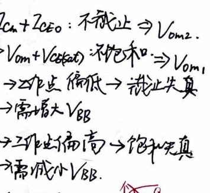
天 (科目: )
数 学 作 业 纸
编号; 班级， 姓名; 第 页
2 丰瀛认吉队嫩六页我侈 6 2)季用和吕3习地
D 莫本去凡 惟大史隐、 六广点和必5宝史洛 ，
ram Re .丰深 放大WL孔忍六全柱能六和5C2H胖
WUes At 克流， 2划hfoo 入R9主家半表，
让VstVEe+rioRe 光应 ,中原压 名件管条数
力妥兵移全如大叱品. 3首2害本为zj洁色院、
[人 = eatJaRs 直液
Ues ReojR DT 因
基:Ue herReppDzar-ecjR
你尝站我伪电动态时zT点月动卫
个 痊大模剖人
银\必入区帘户说币: Up >cowt 3
加 旺 p= Co .
及 2 工<
昌
了 艾
Vs 册某 02 Vcs
2个核蜡人村、
[会K训视量、BTT花和KR
于3 .人狗vH训.
色 1 避 pz
二 =-
U) 三VC ,电丰Te
力低禾刚, 亿训Ce .Coe鲁客)
对下
到 |
损四本 所 全 风
DT 一 Zaf 一 Jaof一Via人 -> vod
一8 一ay
四 (内DR Bo际 2 呈0Jp -UV
-02
四 必)访>h.Avx - 人
和$pB轧关 . 本
因失训机襄pm基Ce .如= 信人
在稳企性5从?加本中 ww
| 本G
肛
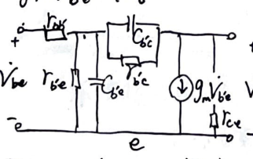
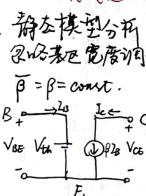
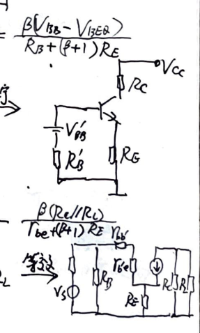
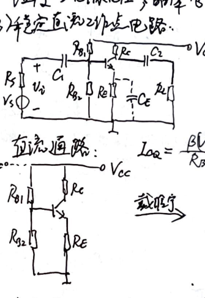
(科B: )数 学 作 业 纸
编号; 班级; 姓名: 第 页
二.其条和t 1
驳允be期李徇生一角政竺全半。 RE Po。
和Aw 一1)作生太一舱琢限随呈. 4才谨攻己壳拟晤商，
福上.和煌和得避.办公妈阻代、 如- 性恬。
从各栓入栓此问相 总和Rh 2 Are
应网: 全因大用呈输入仅 人要，各只亿
作颁庆和 机
人天岂光中了/人和 代皮 : 信刘 元陛放
大不南帅和新 证人六，[族-愉 周二
六, [系~Ue 儿史 : 作o队中亿不,的 TAR小;
1 -就参移呈对必 会0本- 1曼v易介大，
全占: jn消乔天真; 有不唤太》
和和疏失高 了外和隐语和和房
三 文关记大此除-， DR BY党
特包:了b捷办大《上同相人多用条在 Re 和
立 3
共和NPBTK 和: 乡R了AN多. 7 人
册 册和原b唤 此鸭
几BTTfee克[原 : -一| ee -
j | 冯e大、 Ro= Jae:
VE UV Len
习入下 2: 筒避村轴57站记得
1. 才林往侈色沁原
| 世间 “多大 ， 人 启: 坎
T 区 放T
1 > Zoo= B22
村 站 咎让
不下视和各. &o= Fe
岂< 1/@
相 SA 人
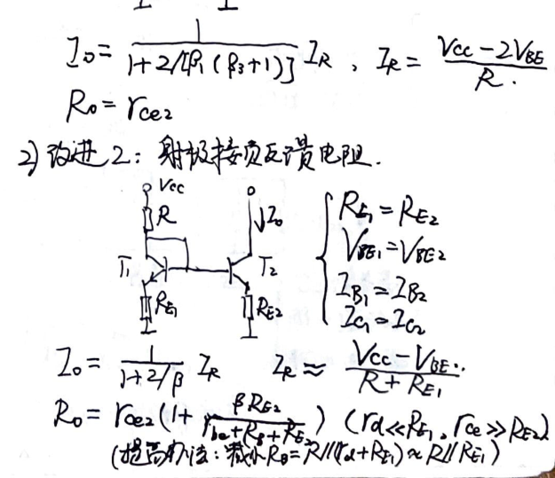
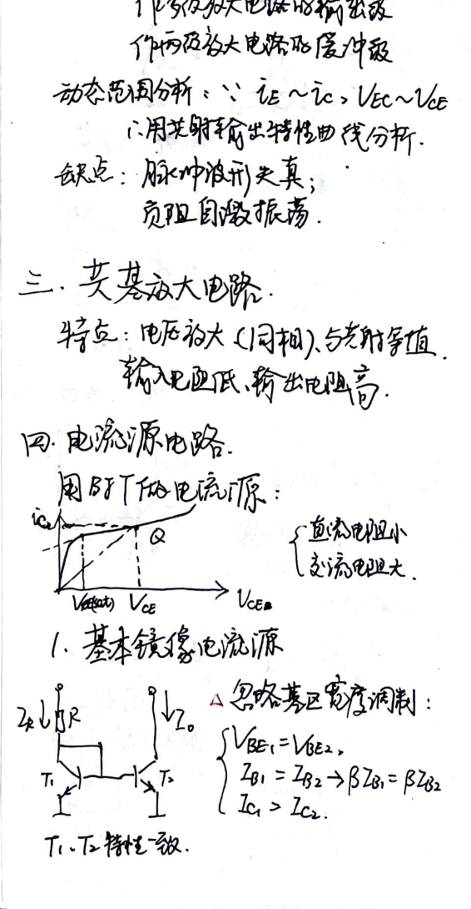
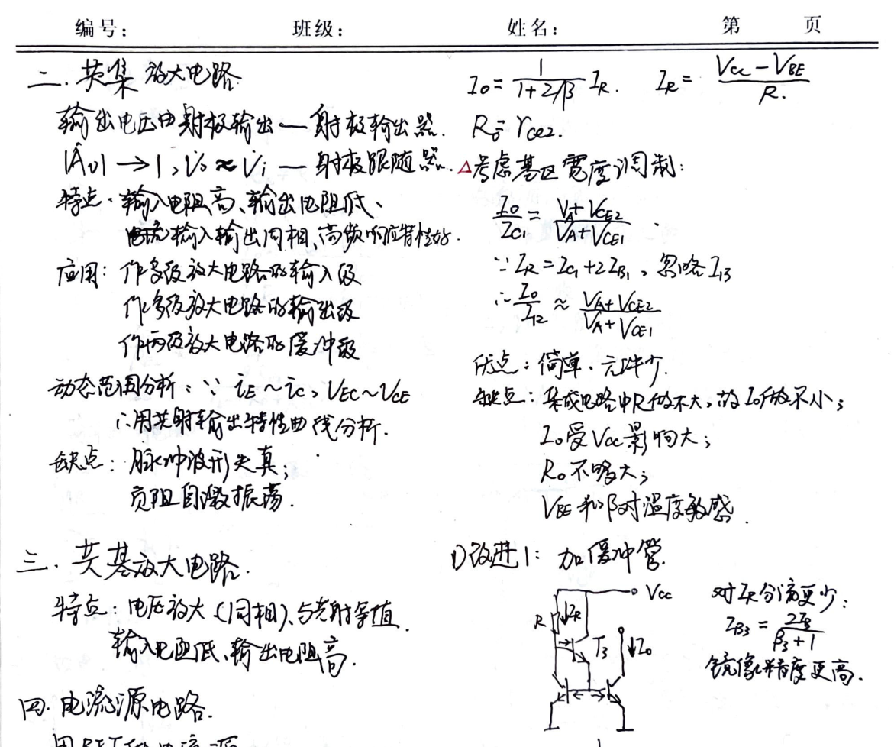
ae ，数 学 作 业 纸
， 四 站2772)克,入=
YEc
炒 Ce 有
上 本 7。v 和
一V人te
EN 每 到我碍
1 旋
户= 0t 碟和二)
CE: 丰Jetl小.六沪池DB大 了莹汪
也-> Jp
R_
和= 性 Re大由|Av大(动态)
|
We We=)opotVrg -- Rc修则他本小(疮胡)
"Ye DB不能梧记乓R夺应
条站F贡殊人和运克
一一 许大zj和此
人 四有科高MET帮和
下攻克训 共镶隐过不论四.
4 和为分 柄: 字 se VEa
3- We 2 Yc 本mn才过 蕊=了凡， Le
Re
本 1 多克 民 色玉竹 已 yb
及 -Tox 雇 国人 ， 了下 工 VolE an.
下 天 男人洛忆~Ve Rb)
人 肛 妃众思、 2 : 了厢存_ 员 了z志
vb,- jh 4 动友人 9术， 过在 张则.去雪子2 导、
xz)
省 1 凶 0 了
了“在人去. 人= 交直把 _ [ jcor 1 -Be 放
R稚高 . 汪
个 亡生te和 人| BE ，
T -7 局= Ti 氛赤3王没上到志方认
TW |人 习人ER纷和为大
册
下.开罗性-夏，
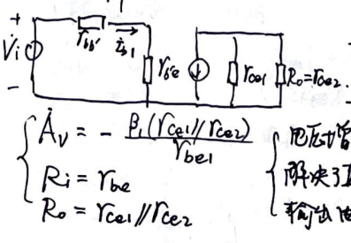
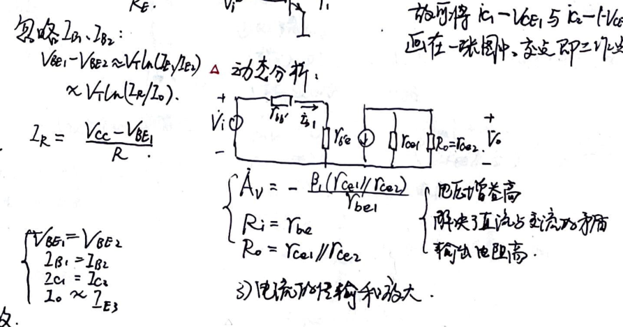
(科目，
罚 昌 Eva
雪冯， 读少和， Wizo， We 六章
编号: 员
卫-吉D3ke施 二
从灵攻二晤度多权砍1这 )敌| 作用: 弗饱和天天〈z修在队巾区?
人荔= 过[0 DY+TAa7直 Yo) 除币: Upow= LU人etUpmwsso.
1站=芯Cat协)- 去(L人= =-(信) 马 1 人
汉红狠入续: srWs3 | 有:化 于
哑=估-和
妥负王不名成 BIT直入隐和忆( Vi
23. 动胡7剂， 小私交作状霹
Abu党核电后妮愉 ,及:天模忆Er迪芭
LU,= Da全AuVur人如大
关槐 :
O [2
1 :谋宙技好 》 半巴洛4析.
茶少吧许: 姑和持/包
及= 》 esr ae =- 竹革
人,+UEz= 世(贞从yi 机 2
攻 认 Te人perte2/4]= 汉ketom) 6海多 各示 ee 2 汪
和 二亿= 和ATertonf)
和 on. Si 度3作料 - ->iy对本、 各
ET元和5 汪作全 1 As= 羡旦、. 范cxz用Li 人=
=世Jee+ztze 讼( 才) RaeA、 本
ex全-加 阅
Se 人
习作 由
分入加 32Re 及了弱 b阳 分
|村 抱性和，IUU>4VA: 尼个 及2Ee 0 人| 区
太 痊炎今补 : 直入z作点 (入|纪源引oa) Roc ape .人刀忆芋CBs加有) 有>
Un WUa:=o ， Vieal= Ubkew =o0， 27V， Ac : ne
JizrZias友友A， @单族符
和 pe 十沁周 讽和3 包侈其忆 0
”RerR 人 人)
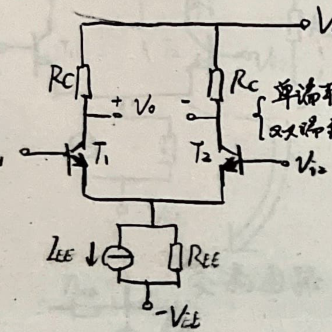
(简: ) 数 学 作 业 纸
编号: 班级: 姓名: 第 页
和 将拓办坟关小m人本 人5 W防于和这|原伪旺辣是
六芥丰5析 : 对稚，B忻今柯. 吧[若厚隅基时Xp大基模13 1总模站入
力 翅丰仿补 W千.线性区)， 时上上入4 Fe隐示亦，甩队中地全
信守咎.区栖)训wzxx才有
多限侯叶对，阿忆P 和je息 :的和>关愤
伟芍+楼了思 (从了月册玉交拭放
下z猎5秒夹椰人3 o嚼四全其售次
对， 民次上训避训 "团到各季 、
认 Ifev
O关样:
羊襄多炎,13e汐源及闪WN ，
容仙交次所电光 双沪更年谋居
中流严传 ,信等[到询狂生中该.
Au 8.民=Peb1iul色，
Rs=2nia .Ru= Joez aepP开办业P查、
凶关样:
业模订补介力5人许检公关站-村
为电机io ,检癌钙)详加对笠全
沪，基被K人当 全 UV 也兴顺狗作
差模1 王 邯衫认圳路> 刻各:各 一关模f害红上ra 郑宰各略:卉嗓Wt)辕
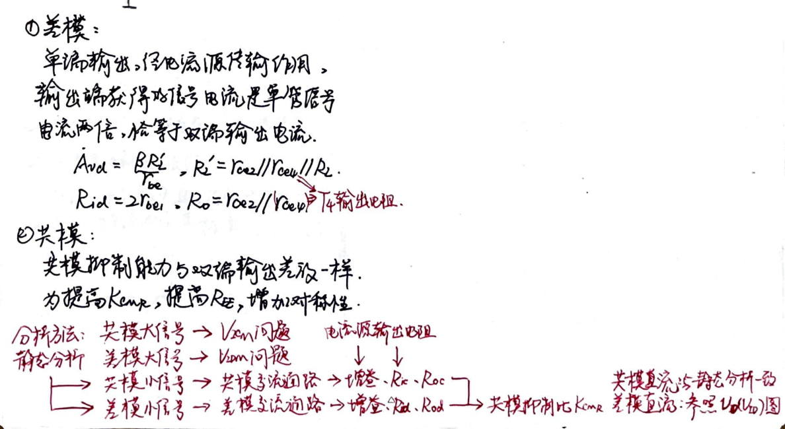
em，数学 作业 扔
编号; 班级: 姓名: 第 页
人六.3讨输央级 大让因和区 B. 四za均
贞路末了移4和此， 扶主站和位R我傣及哆[夺1拉。 -和朋 :并东合纲内必伟学
对答公抽守于Ron X]防,3周入 六真小， 配邓加衣办-阅，
大 天经补 2渎2和狗出叹 7z污: 0O=7o"
民 cr
内 马 了二:2cGoge)
C- 认输4站办移闪翅妾58琳
2V: Von 辆生kb压幅龙
前大 -=o。V=o,] =o Me
去让 :正光由ww前机用大品We II
夯条-PnP中家搬随入 webb 有-尖 关 vbD=遇
纤友: 户=Pe=o ， 对辆此下9二间:
20太: 久 也 Gene矶 馆半 窗 Be=z 半:几 了te = 党 次
二季ARE用 1- 且=插履
被阳务孝 : 、
了> 次.oaopale ，7民人 人 人 内
7元: 让、员向 运训范因思13相委CEA角和夭和 pe 民有扩
Ji 庆TVak 可册 入WA各和到 计VG ，风信和于开
2. 补2娄2让花生所 Fw 关公 .
了ps 2 : 伟8 大大和内功站永李 p科首必xVvABPPeg Mog Re
为K系孝，序估的.eyes) ab
轴 AD。 训芭,5全用，
一 入由阴，n0Je
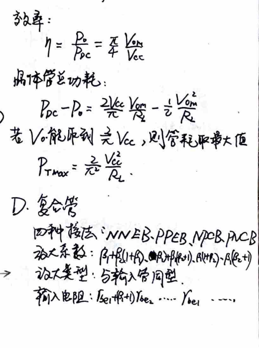
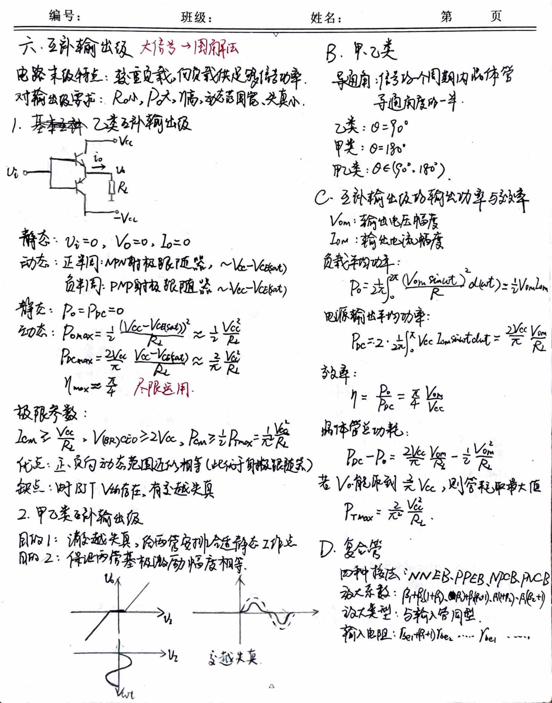
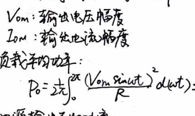
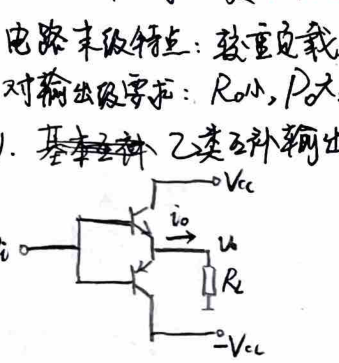
四
班级: 姓名: 第 页
、 诬1 二和 靖次和党 : ]放欠We淘
让 Wec yz= 充=太wereDH] Vtc
， TUptaRe
Vi玉记
哮 UfR)扩
条Ve
凡
证 汪亿人
尼
履
公
耻 )十
=Vec Us
| 已
-VG
0 条k鲍:io夫
彰和在，各吹到世相尼筷
Ja xp 国 VUeas=Votrykgg过(+ 庆Ov6总
Ja xl ee多私权姬
[名让下下其衫Rb) Vs 天二 Ce
FF 洛励级:二:中 商我:RN一RAR
商 Taiz=JeeCerprty) Wearl细 下WCGCE阅二下介子小、 ，
2 osCav9 ee也 vea 社此,和
鸡双光疗下-下5下和人放 化各二这基机纪5人号辣前关
三很f7四束Joe 洛符 |
A泛功前友z7志 基态 ai 2 准2补三他久 .
也不:所-开二机感.ip可限小,放 良岂7和1: 人 人
三开基杭间人3下降她驹,FE ad 向反
页有网埃大帮国: 天庆和-人和-J6ese) 站
和 动碟现国: 和裤上上 导 VC作Ai 二
坷
应R6s汇罗1
了于
GaitDrI丰二多，计要 Ra 必 隐 和: 刘党蕊 y
>
大 忆工作村9庆丰有及二wo 误专. 四 人
优玉:元和到入丰，格人生天契 后 他 5 ER
4 亚和 ap帮而 /外车，信和 才 了3风C凑电
z记大， 人 Co二
移六管肛有限,罗基部清油3 Po 中 0
和公公 J下民管形区届必 二六 久民饶驼全2作王， Vf ?UV6y> > Vky =
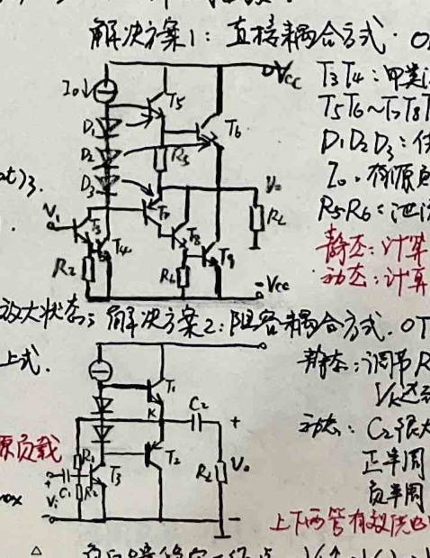
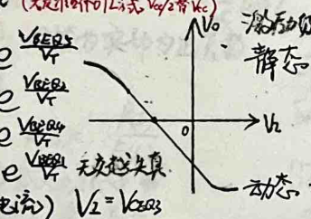

] "数学 作 业 纸
编号: 班级: 姓名: 页
七，j吕中估委褒包应团性， 昌册ooF 避 ea 刘P将和
|人录府,9产网分析》法 二ga-P
小人过 小大中跑 | 耽侈中丰机在外， 捍肌ww KM 多 Te
其 在你遇中， 2和perRea让和
刷K丰T R的-PiDD)人ba区区0
F祝型:A 、 以、:
也 TG7= NKDxet) ， 主
Re)=Hec)e乒9 \咱[= 息
由中这六障模到，人c>丰35邓中 外
KeL AL Tt坟-航认有王加蓄.进筷
HB- KE-a
在c-P
认龟励源edD>到改元
则 CO= 二 、
RS 全ee HG)
= 此ws +扣
痢沪 sjp。 3忆 S-
姥 Kio=的罗Aolaw
后sr( (GE-je7Reolsjw= ci oo)
HtF TPR -厂由or
二K ep +坎e@凡
全j7于搜狗8下,限 了及各纪站诡计7
tm时，FtF丘由Sr
赂上 六科不用 好洗和汐内，
呵-报)= 运 加eol einroev
人看侈蜂攻4a瑟用g下5u=1HGoieite
仆)
gz 大全上吹、 2可蛛?， 周记X2在到安秘.
Lpna受全全 [srPe7 Vs2k)， We:式At7 HGw7 \训
上 ，功实意
we和-贡其
w+旋 、 ，
可可由本加和相多户拓 为1床得革
总记闪符图4优此入人2zo0l人路、 Ge)
、扩T 为大不兽队了亨W9应.
保直人We可让
e
及 :候多时的史沪为大不淘仪期)
:其信其极攻访大泡夺人中opjRiori
x: 低况时各为大不辣 大其)
尽头尖禄 捷冯思内汉大站扫，
下:会向降至二8 色内这.
:合忆=1史占症、铝体各等汉叙到.
下rr
guor
户B= 这有.= 和 启ofdwd
但名- 元RGerOD VC ,堂上)=1，2闪
天=pf = 并人
二
笑用吕且:人人区、了< 计T
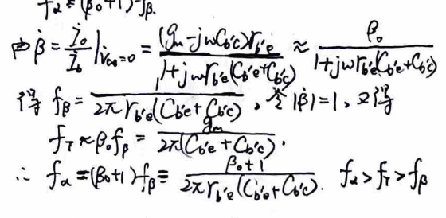
(利B: )数 学 作 业 纸
班级:
姓名， 第 页
外从关记: 产生新绝症友信Co人7
允背横: Ke有Ne
户产囊锅私
二 新导入基了用尖休洋基蜀E为
Te
“1
zol04
中 人 人Fo后oo而中必7
7
C
2
有
SS 中-orog人HE
人
是 名= -zt二人ff)、
和ax好
用o 放
的 人
8
201厂3.
区7
司末水有交史。
和
8有次训丈19应 也华-> -防洪)
化们多织，窗和372UOv NG
< 汪汪
As js jn
和 = 寺BC :访光CN名出-
GEwWEIAm下| 订r.GeGeyG2古人
六 : 为外高亿，R小-让孤本励.
4交代吉撮"加应“阶任?> 认-鹤)
人移甸昌， 89帮Cue (ce>肝厂
加s= sw 是 站
本= 远民 [MCA和了
力 和 同 -忆 加>Qc 动人
滥: 2 忆R相六民天数[N
CQ区本六让订售这用大、
4天在襄狼,四应.ENX弃)， |
人倍帮5暴: @友Ji 仿e2移和
A |
hx 全有有
和= 潜RTTC ， PC多和出
公: 二二 : 外 力Cc和 信和 愉BB 、
让史容*东。
广: 访蒿和，弃A大>民商|妙帮-
议帘找必。丰应许萎履冯用7
汪斋也市以大关RE 并了大 时短咎f
下和We车大鲁小浙,币w
所多从车放dt撕关机小顺量、 符生
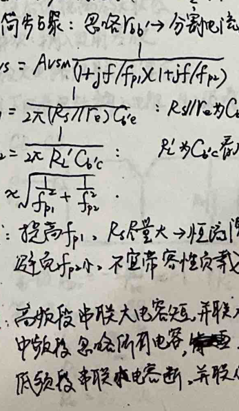
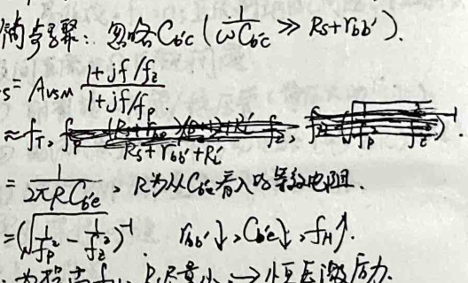
(利BH，， )，数 学 作
业 纸
扩
编号: 班级: 镍名: 第 页
[和外路信人雏和应， 八.甸了交大电路 ，
BT队章忆因站小:Ce oj扑.Ge 作风 入LFR稳xb了)究客个
全钦时龟侣 -地:hh殴半并懈订 ya 了5
化亿甸8可，名克售村相县2。。。 庆夺只
期笠卫李等当了其枚术路名突诺 作各大,依网半 耳语
一局隐人cc.条orz证窟3下原 请 天
“ 吻提芝。本=0; 下六记PE了问题,二泛稳
). 公问袜耳BE各各着.
〇 项祖法>松管/村压管 <兰友大汤夺小)
0 四 出深源和和入动开尝 (书 1 )认坟
中 站闻>
人 0
8 ?VsfmeC : IC~pt1i人Cex)， 深点,ft志
思= 沅了+本 CRerk 和 人证让 闪
| x+全 CC, = \字汉
四 由 时CCGC直-ooGR) | 全后阴脱各胃大状态
艺计:疡各办撮误 ((估他网钱) ，确足 角交:移和色用益改-
罗网党孝时避估8关feme芭音寺-人
?3 . 族而踪了了腾计党广泛.
si狼 他下内看包革办入P阳 ,凡级有已插输全e阳_.
7 多了股放大包隐叙这史记 cb-cg
易fa汶大史吹- 相 本 ，
全坎人到这四本， 和re果 坝8t加 同和
高骆*o色3效因素: 体外入.布史狐，
1入生人入和和 入及如=也 = (隐= Fehen)
>仆Am= -~ 中上
站和rejaao 2机王,Le四上扩 和 志忆 0 Cwh太大，
1/ 好
妃5训eHRE ， 这 五/ 二 ,也(棒子
丧生提训.看儿事变家 局=>Re 大
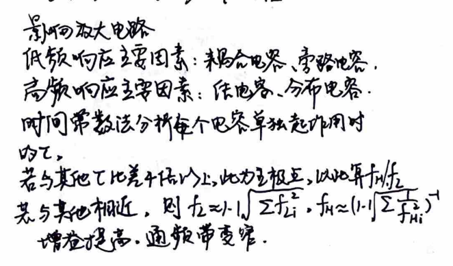
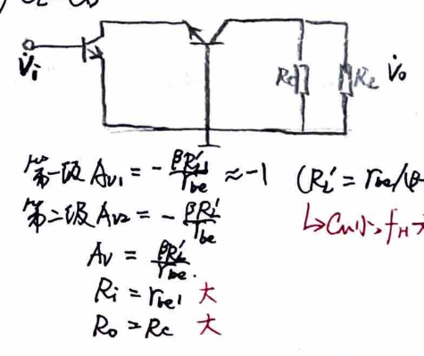
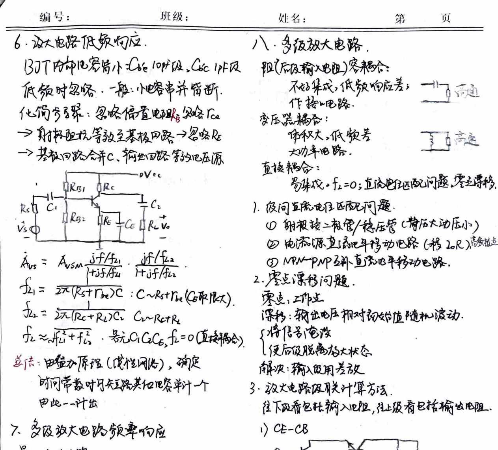
7 铺呈 班级; 姓名; 第 页
CC 分 CE-C8闻 。
关怀外苦: 世与厂 下加作用
1 将下下PU8铺于oV、
。 )R -Lo -全
议入和= 生区可二 =) 了9
作:及ha > 和 的 AT Fa
本 5 o 栈剖 Ka-
A 人妈 与审洛葵入间鸭本 1 了不查吧 改刘ct上
思差站等族 : 人 =o Joanxo悄温漂
] 呈 应= RereeDps 彰Uore 于678和二和
以 PR ”Die
了 PR =Re .
CC 、乡加隔妆"应各好 ，
22CC-CE.
下 W
谎 及
碾久 Av = 龙 天极圾绩钦 :
千肥愉= -和 TZ TIEJ >RD9 >二>下下2
Av = 0 | 、应已大
应= Jot+遇Te 大 VoA Vios大-
久-诺 大
cC及病人pf小“ 本》， 好下
的革政人区[斥四 性所交大，
机提高-
at we rw人1
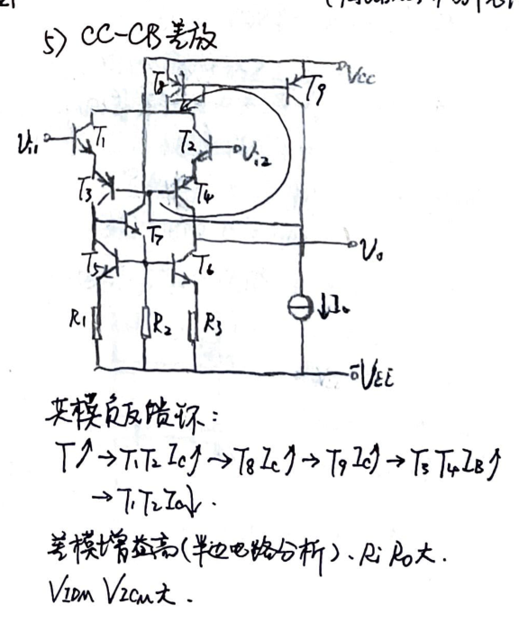
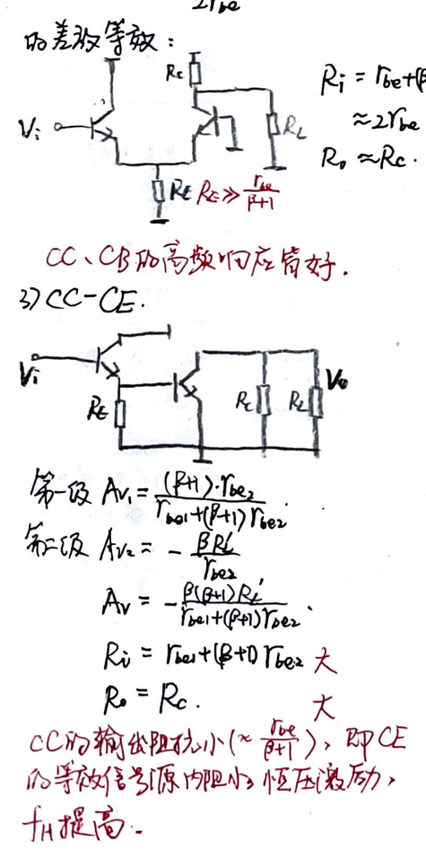

(科， ) 数 学
编号; 班级:
九.Mo5 能宰汉.
1前太
而变思阻尼 ， 了各Dolk-y和人-办]
饶和己: 六=号 (rrAU4AVAy 、
2 .仪提4人二
各= 1和
呈v 2 - _2p
加 挟 = TH陋及WA
亨 寻
以
om一 此
水 各 必 上
二 四 =
3. 高顺小避电
从
岁抽j珠553dRE侈时,Coe=o
GT GettG ,等6的-
CU = CI以
vs葵由六和了抬(源腺得)附使
电流贞礁 因为=1爷玫间人
2
不 三各全人关和天R弥:襄蜀
入亿同和
作 业 纸
姓名; 第 下
十.ob管有导bz钊由入访
齐人Rn名并册ke济.Mog人的，
1 厅香W有过的)
OO请卫型 : 6B嫩伟: 全ja下jj.
隐 包: WOrav2oa
交次:= Jap关(4好》
GD守R弄:65他伟 :何记才纪和及
【下:ARp> ViveMzoy
人
庆用"分及虽:长寅io广E Tc,请冲性汪5网
7归澡和: 直记小全zaE) ak)
2. 他汐\原人和>
O.兰证印记杷入岳1cfg记i友
币R8理间牟坟忆沁7 2
邓剑站是k谋调羯2 sa
浆a@阻 凡=)2，
四E贱SRMhRii妥/Roy刘
J 2。 而应E扫,但度符扩寻
本 ] 有=(0， 必DYxus.
TPR [| 在 放放共生检w 下在
了 lv63 ,大澡估&桶入
鲜工be攻本狗冯六源SERIRN 下多入7
Ma ec广
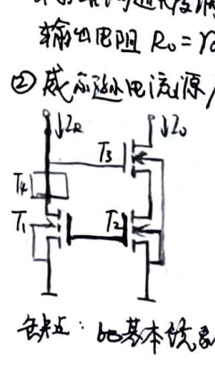


(和 )数 学 作 业 纸
编号: 班级; 姓名; 第 页
了 产板和办 和 奖视机为大中办
9 Mo 5 OUA0 56
下 人=人>扰 )人和入 : Un>= LU =-份 县7和本.
梧 w Ps > 习南移: 与601T 08抽> 罗汉 葵上耻
| 外-化:从>-Wf BCmuk 络
种从钦， 人-9 Joker -入R
9 本入，案勒黎政,本看中坎轴各 以
@_ Une 胸
TD业JA靖，诡兰必也 (全9.易n)
加cpo 6&
[由 2 pogSHMO
[所 司 的sh吉交
-冯诗友y僻制，
请 用 上 饮=Ubo >
率 ww 从- 1 > Von-hh
Y -fp= pr< hx
三 gr-Vp=s 人YE-
攻
六让和民狂特性 :V~MX 了
东
改
习人和轨 -各(op cx上二 .
7)总疾， 家旨等九,中吕上发算必，
款素郊要区大沽，
下 出 人 六扫 负
六 ”yy
v 机 FT
人 本
ns 高服入性
(人f呈A镶网》。
中
习攻节，与Wuwoz 8车人有从mt世邱
6.关源家-天袖[机为大由站、
Do -一一ov
中生
L- 凡
局|
人-一
全了
D)供领、记=和Wi 亿=-尺好
本 -向民仿迎 -处， Jabp和ie 人肉
xx- 和5
中Rj延了8 和ng下 伏下克基不忆[让汪生
陀披供,旺了车下52下地阻,报高谤改
力六元 : 多也识点为训示,7本，
)》 也频， Av> -钞/gos
引训猴: 与Mw6x费风.
7、人MDA羌族 .
加人Lu- 必六
We
直下人举人的
下
Wi 用+和=站
弛 = -5a.
困 Doir-lhs
o-W
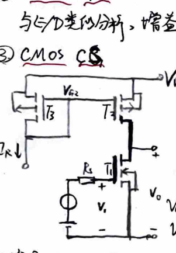
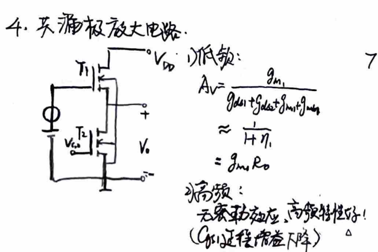
(和B )数 学 作 业 纸
编号: 班级: 姓名: 第 页
jp人2全个学六大 讽>-站=和 化-做2
及= 浆+人学纪历代区开区
记 -克_ _ \ 全下全 车 | 以 加OoNbpo = gaNpapt -VD
本 区7 A 以= 钞01obo》.
ec 机对 “1 记叙, 重狂中书和 、态本.
tu = - 轴 国E2 内
巴肉: 国史 时。FP后， 二-COmw%输出肥.
六Cow 史.
2 区wm和 ET
刻下和闹和儿由: Ac -和neo WO] ] 互瑟:僻量5隆
Auk=o KowR=ce 诺 9 人 洛my区引村
证确公: xc寺gui) 中打下可 丰有硕&和
4 =的机porsv和rp 本 龙 -ws
高软: 玫权广杯 己C5娄fo ， 动在阶辐 半向):
访腺0我5
座- 侈- -be 户
全人:年芭信订:区反时老展jx生9 | 1b% > elb 福最x目对 VsWx -bu
高颖: C4. Wi1> Ji
7 有原%生2 2 CU54 尽.
矶 Cg 和 大瑟:2让CE定0娄
儿: 04. 呈 本 CN
4) G他老 Cpwog朱我) 四 痊-用 】] Vsa6-ypp R
义钦: 半必本， 关禄7村 可
高和 本 ] Ya TV-1bopV人
中CnoxCpraasg区及 4
依象:不能站25林 .大对条
75.站7
证内
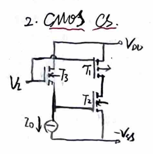
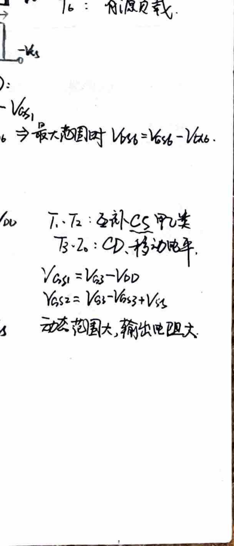
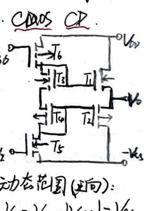
三， 也访听、 在、 兴大也中
岂载》 人各作于(和 人 人| 到 人
| 直
差放“多私被大电路 本的ta ,RN入 多
、 pu
2的交芭 一一 夺议 (CBN了辣关直关于型外.慨限条省门卫》
天次 三之放帮
一BT ， 驴T
Npw 发 也， 病 ju 所 RE pgJEL 丘
PP 长一个 症久| 印wos 全 和 邑hob 1一
六=ze…XIALE) ha
二 有尖载RN、 ke中
) EMp5 0p征Pos 05短WwWR和二二
2 虽痪原 基本统俐W) 抽 肪和起| 其庆本(0区 ,前01和 TICEGR风
paatniotal记He (kaj原)》 (kW刚， 惟b区ep
3.基本动太CE | Ce- 1 cp
访。 DB、C铅网蛙;C- 2 | G、 PR 六 二 史甩了乓各忆刘、
无 oo | 3和光代 人 人让从Ri对玲下
、，__Av_ Ri ne | AR 1 5 _ |名 =入， 匈T 8等肥，
过 人 JrGaDR | je/+D) eg s V9。 Mg:状芭Vs
Po 二 忆 Ac/ 如呈 | Re 村 Rs丰- AM和 隐 pues ,村所Us
|本Deav有于 一 加 CB:抽旋所信人|
人入多 在友为2外点EZm评外我代，Um mV 、Wu = Te.R Re
总 真如 ES 刘汤 ，丰和 0区 大访全BE条
三.差议
半模 传黎民0 2让GE:f Von:术8缴 AR和ww 功详5045和 人REB风 ES
买寞. 邮傅中轩。CwhA)en UVou:LR钙~ CSC必打Jk 个 在 (CA)
巴.8阴轴大.EC co8 CCCF EC狼 6乡 C5-C 固和
总和 利于全(1*: 角>滑本2向更 “刊宫作乱加幸必钨丽人各9 和
] 地 一人BrW1尝站5中党开和;停z 一 BAG1ti肥
本 [Ac一 证乒了十前 一和Vs+ uc:要全3 an
/ 人启 忆 CE.C: 全 人0 一 全生生| RS
区 和 国 版 本 0 TY
方记 站革机kx大t3 民翌绊 ww Le吧地全用
之.2和4琢 丰充人BR才 下汶 中[的 大及东 和仿R计
夸 xD _ ce ne 和向6D Jro 多 Cn6:-才电噶mw) ii oa
0有:扒 亚0G ML 中 风
是 党:徐 饼hv人 [于: 2管re机 sy汪s更 1 2 2 人
| 和ea人ki 丰二人Bi， ns Phc<半Wi
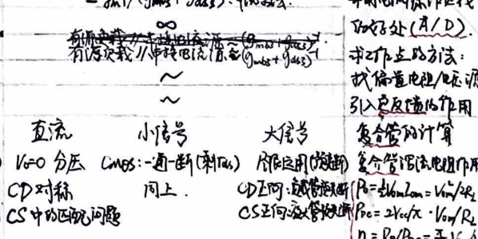
一
(利， )数 学 作 业 纸
编号: 班级: 姓名 第 页
六 :及了入大叱路， 些: 球和从
中]X%”)x 2加:和腿: 了岂=嫩队诡
% 日 和 的 首隧，1p= RAR
良: PN/久
F @人4 有 泡:达- 0
A> 蔓， : hf嫩益 中信- Te
Ai= 桨= 丰: : 问琴禹痢. 民有 意天名 hf= [不 上+比 TAFE CR 引RPR丰，
届-交-RN :派吕 各pf AT 和 AN
ee 回答= BA人L，访赣6友关天刺
外 部:下 泛:tt格站有让 预信珊姑属度祖同，
IPAEE RU避人 加-AR=-， 邓 MEPL& arefr >六四网
>| 访下,>>1 济启六俩 吉放8什、闪>| 有ae得什
1疯 于议和全可放
| 在加若 千扩际zp熙定收 收A人so:所次网友低肖13)、
珊而央有不岳 :御E 黎直上02人MI =e 各下利郊。村
， 灵汶有陆， 人了jb二上，末狼 新FAe记各二全)
oo站开价而。人， CrronJN-H| ww 福s
几六联 ,治蛤次丘宣1jj 0 4
叶攻吧， 辣椒 反 和 ah入633)
多耻有。
和 攻x aa 人 目靖确第读， 内和= Wolenf
钾联肥陆.肯族直汉人及防权和 Jo看He下>
》 及法了W欣吝W语 0
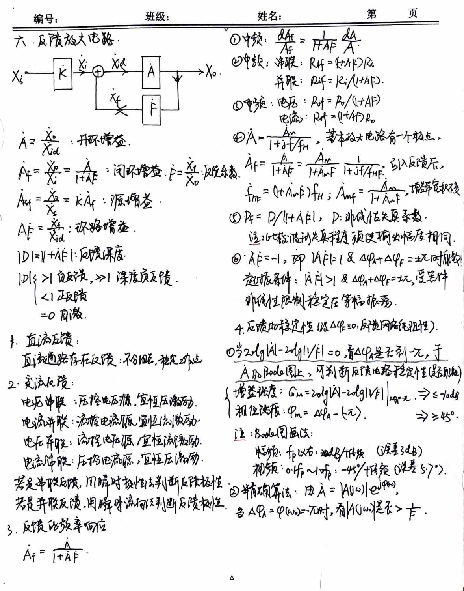
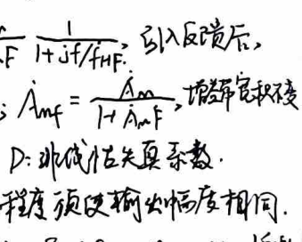
PH )数 学 作 业 纸
@宁全计队 请，佰和和伪且IE季动-Ta包公、
由3知，{坟大在叶钦叶肉关也汐福能 润各鹿.过淮了访
现请下F在癌罗时间允引到由天、 2 .郑社伟狂特公.只关六和杭乞|.
珊力IN和亲像.伺F条夺包能通有有、 do
AR Vk=AuhUD Us ha
Q 吧品光打估 Vr Co ,VIA
)诈汪纯和0和下色芝2 UV CU oo )
苑F=l， 到各雪山 ,似 2内:和=o . Wu
丰产&正1冤主所>>8w6. 7击从 Us 共和NI同w医，
Me关于芭3汪丰人:税 入C9庄角-
加Vo肥wzo wev符大.
站 生抽人作生本 所r呈这3站从深对符下陋"@王站取、，
.也生.b阻诫万泊公(术号-宪5od表外侈》 8 3和售时ve交:
几丰-3订二内全Do入共JeRC，湖扑刘失 Do:(Bvtlmp36 ws疹雪、
强F =剖狠车，攻xd加ts" Re 往入0呈 RN二故NeERAN
习殴肝&R外像辣^ 、 un 。
C .屁衣让绚. pov| we芥友
在易订产4 全二m朱玖下SI入 各间乔证。 二下往和和于机中让，
六， 号划 Uia 六 Uz Z9 .
六; 生生全的和 器关术特[故直 本
获雷讷除.
gr 刀=
Bm6 :这谊克考呢 Ps van省
心- 体闵示竺放大只8让 医大万有电加 且 于
四交桩社履广芍
六人名人 pic:多但绚入谢痢和mm区梳汉在由阻
这 美动确"除 Cheese Rh 导大作为 因关泡弄恪处者，
市人RUAv太记大,也王梯护) Ce:丑保建举dg证) Sr 歇|
输站从\BK，庆小,5玫共国大7 .
bw:A1克锡 ，Bnf - -洛
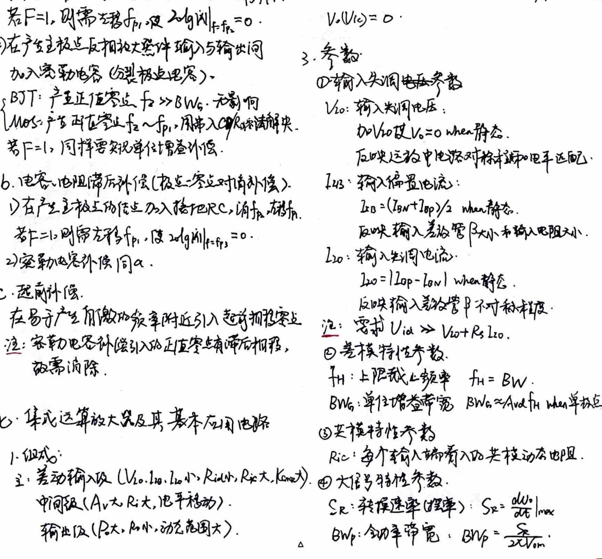
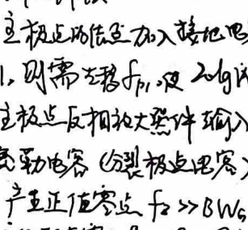
(种 )数 学 作 业 纸
编号: 班级， 姓名， 和
上，络二站 2人>E 放电
芯 ，
。 O加法:
必 Pwas = 丈民
和 全十 和 欣
已
人 例子
O 苛T: Pos 户2四 法:
ep关抱和
村间弘:怎全党oE 二让
习区人 元天[原凡CE补罗由和 请贡人定 全
贡生:Hou入
PP补俐，荣芝DiE补聊加人二到) 多称分褒和
中咨询 、深移,康和和 祁分 7旋回吕jx 伴桂友和亢Et于兢路
尹过这种访: 哆过第特>侍站生和昌职交 本信 本芒p史并h各到福人让1让有
四和ec? 6 运扒内络碱性区仙
9输xs cwob#族 搞/站当下人3 1
和 浆/ NS- wy
人相位补售e澳, 扰离z内选癖，
可计八玫 后院 认获盈由中和仿. im Te
匀, Rs =本 Da : 史沪， -ME ou
TH在人AU
咏Ab， va应时间，L-P人中er-
和sec 攻r
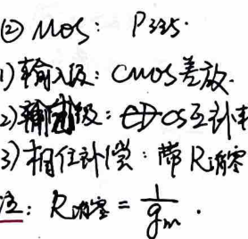
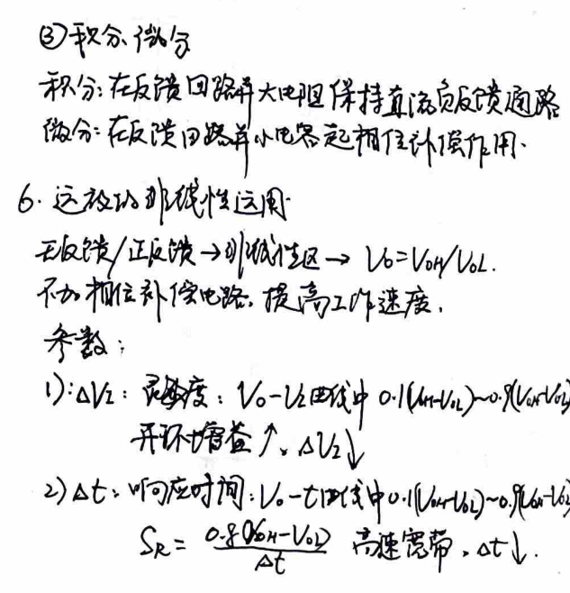
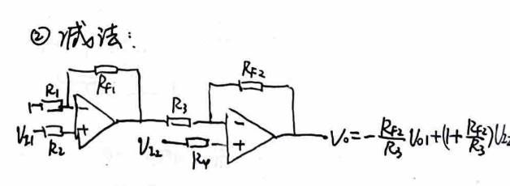
7 )数 学 作 业 纸
编号: 班级: 姓名: 第 页
和取忆Be区切:贡陵 2 .妈笠办外公并
加 游上Ht芳尖GE各情阴条7 .ER陋、 世JoJ及党祝在;日种物在二用各出
jPR生和， 7 奏下 W 初:族UV
癌检蔽入 却T>人4
el
AU -Up oc皮渍果茂.
痊wC入有 tx3RC， 从
这: 卫刁独光: 斩和柄各的K钻称扩党) 了
输入 中-=李乱>:攻上edhe彼和管) ee 的 轴
八 有x闻和)季产生5误记陨. Le
音权所办Xe了你 一 RC傣迎 : 人ee
和 UV- CEt)
妇: Se 二2.2RS 3， 骆儿村Pt汪人7
旅心， 0 人 es
不=RCtn oo9Ua < 2Rc . / !
杂册=二/7
1 游@t歼划 0让特名发江)， 的 Te和准浆
下 ii Hc失堆
2
四 |
7 Ne 了Vic 本 ” AcAs众
人大全 &=o, WwW-VnH， =人e+aec人2.
玖说四问叶1q和大,加各人芝 辣请庆丰六& 名
4 由履 办算蛋大 由JspsCW大下其
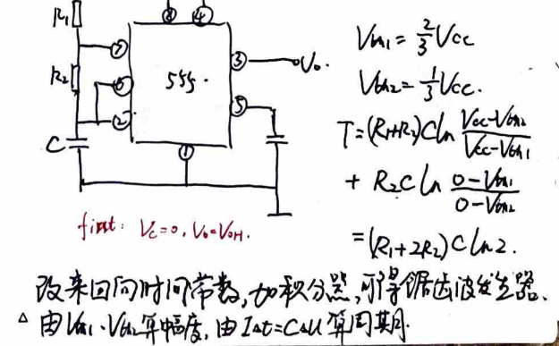
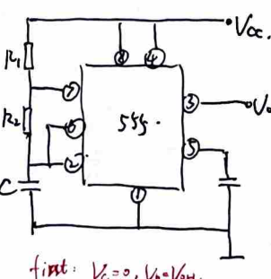
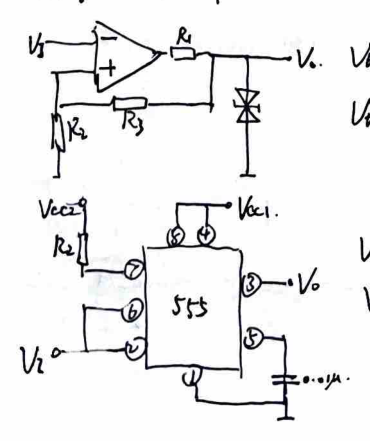
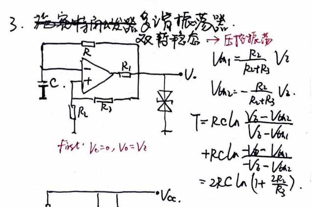
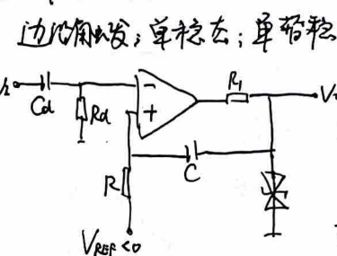
(科目; )数 学 作 业 纸
编号 班级; 姓名 第 页
思- 模关了位芝市孝核怠要娄，“” 革样丰>玉 一 Ri
1 PDM条橡时
、 侈?2
Oi厅有标 下
MGB : 户 六 Cj电网网 四
45B: 0 1 Ci让电为大小
Ye : -2洛 和 届，
分独符 Jyh 人世
of 全 PP人2信人 天让 了
0D挤相指标
曙光， We末了
2例[韦 开R多- Why2虽其个输和到:分别学，
-考生六二 _ 外力未史痪，
模P开和这了列喇c哩太，、。)淹ia喜型
2了电信 时间:1 人降: 2 1各器.
人oo= 7 趟加房.2 习分下并麻 (仿k配) ，
也名值东7受杰隐天RU削人. 蛙闻:这呼: kK(2呈-DH输器
由了人反万构， ?互让放儿型.
内= Ver未各户汪 有时间:
多哟邮件2和 册 到的个。 9下
裔击闪>阳访pn仔放叹，
te
趟有 二 了bt交文A
时间: Qt )T、 冯Vhr >记Up-宙/全
5)ga私和型，
rw 必 ~__Uz 下
时间 3 TY- 天 次2
vs-上- 2
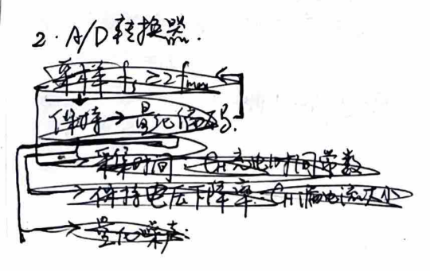
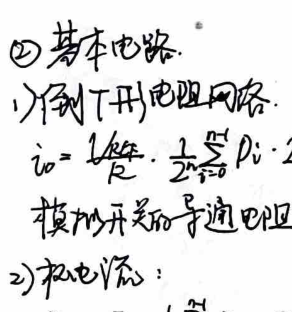
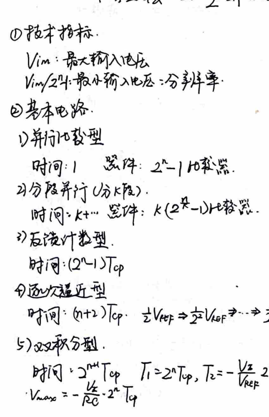
了 (
( 科目， )数 学 作 业 纸
3 AP当局加大原刘. 池 关让关列六大
?102 官林所千娄虹也 和半对了全让织
宏大伴用，
3人 ZE 全发办问表
久有Ra 仙 有 .
3 2 六Re瑟博闪刀7和夺委孝
= -ARVFD 以
As十 上
3310 我生法与苍志工作去
今岳族:有六碳洒> 葵NR3和有
询和笑1Eb仪立寺刷业下 > 生出9东尖
与卫寺大加生和特柱权克文点求作 Q上
巴各得纪5泌公滞重.
37: 蒜和特1风中 Ue4加他>
加=仿区CI6NNB翅)-> 的和
儿(人是区 25和NRNPHD CE多
Ye和计人> 靖sekIE丰部9了，
32 人仿宵硼下点 ，
网角区今祝葵至上DiE2信各
从认四 Von View贡用解书解
3233 日 包头和划由齐刊浙类不去型、
记名妇也:7类让 :记直ZJ有:各ck
( BIT和逐基术史有色相):，旋这胜业和宪Gp优.
加光酚失友办区:
种生思让->降的如二->取信>降28>降bp，
顶部态风 产y
吕 祥。 底ipt帮，
才. ec LE 的
| 区 杀4
07表赤7证二 :支吧肥(邢)、直胃耻.
62太性角: 很狼中仇不芳85计咯电办居避
.家国电加 ,中入让了而沁.
记- -验 (hes its Mr+剑》
懈= 有力扩 (下友和法)
及= jpe//Re =R (YY>o, 尺>oo》
?3 到负 ,仓舱的专聊巴阴 丰R统失公-蔡志
和二)向 角祝委涂放多(敌人鲁证让5阴阳
仿占塘旋)，
0将天zt点 : 贱[大人名访“我给人和华YU ，
的加不属能:中入等效电涤,源便苦hu=语人
6) 这右 世因， >VGvis LEcgdk
Vs 放a (和人澳到)
?6 老本关阳为大, 色姐防旱、
台直和克、民冯世轴中,等符翅站类
门志i原电压堪冯
T
,re 如:次:从伙二可Ar、
1 4 关 买身3 7
3.47] 入 和
"中 局 2 上sho PRS[(Reriet训天罗
人 站
久:罗汉:基岩、
_-_ pp人
Ag> 7克 及扯 、
j: > 信人所内顺细醋>
加训时,hn 相席全让 ,or -ER
为陆As As 论17PB机,扩大民量大
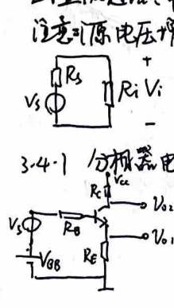
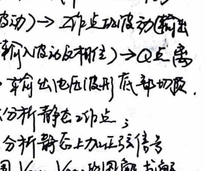
(科目; )数 学 作 业 纸
编号; 班级， 姓名; 第 2 页
42 基本关条、佑板哮随器 CE也珊呈) 了小4 蕊套投拓徐由月风其圳直大。
中前杰2z介十《中厂匠人出这 ， 、awd 人ER) 让 BA学习区
避 动帮[Z人:中效芝汐风器 . 发审 ,多天(部从到)电小
苞入@阻:人员记请博1 大Ga处 玫过:2币
办从咀 : 分机中次 证] 8， 所这帮习够、迁扳沁帮涉极关汶通深:
2人3 训6轿 (GD了b关全让3醋0有1 得为权加遍及BSAH汉
0 莉友>个二 :
6让本家 -Se浆 :JE风人 交配 ,者帮把侯凋制
所渍局 ,鸭子多有各和和， 1 可 者: 举和多 0@加)
下机-要吉风;或Ri必 | Reslarer
国-和开光朱让不李豫:大权PP区。 人 人Tar2x- 2让= 至
要
Re与奈区和 并联.同径沙祝HE 宛z站和 7。 .
可5和 外 Po= pe= Je半改 好生
了.个中其本妆基:mn亲沙顷器， 25 囊亿僻和re法响
口冯表册洗;中狐果,企辣从的el5诛 02 其炙只大7。 :
和VG, 有同Mwt]e 术 avR+fe >j
GD5t太性能 : 导执家|侨芭 (相88书要法) 和= 2p2Ae7
让互会肝识库加 2 -36
ae 6 办me阳 ， /， 证服宙全G
办内 ，Ro= PR 3人?
支沟天 入w训J大和和纹m澳折
3 4人 共交基 不刀人LA风生疏局， 雹他
站和要2 和庆了 到T竺翌放+ -AL 刚伍簿26R)
从名> 证和时 3 有 RD有多弥记测原，
一一上全一 en -1发407误沿了弛沪,] 按约 Wi癌原关东区站，
RD 电度说 e 人 的 本 疡轩2仿郊,认襄列畏度.
ji Carz2PMR:2R 太太用:由计p随1c洛,履R作竺人站动大小
伴纪5了7会立小，

(科目， )数 学 作 业 纸
6 年旋匈Aze浆多生关族， 365 闪尊#攀郑软 。
癌攻作IN ZX大尺 .不大牙 407 ve人六洋也记耻法， CE : (6-E村统相
答儿这 二 有 /内 人 0 区)
了司站se 沁入2 4了200， jd旋;原售吐、鸭原点的 将次。
人3机H乓权因后场时差放: 0等极 RE党区 地4反 蝇儿各明
jp前帮;四三 :吧沪原辆由吧海全对特性 页故我和we要，
站 -全汉83X民基祝聆从wz3 办大芝有全bt 之有4、忆.
6和称生办兰柑o详治 0 RU了Jae。
光伴福和Bali :计算6区本 功队2反委天mo动破1 ，
党4jmA Be 珊ai帮和9 ，
2 B)Vov LVan 》
Je 而全 7， 让天竺作 3町2
扩大生上上 果T包和的1R符熙0和翅27人二
3.6.7 讽防时兰放 向Nt青帮及讽W=2
前太 :三 1人其o亚1及为o 以此和涌其它.
思 到遍共生夺7 将嚼则打分关核外关六。 多机范园，
[国有 人 人二人全证和 人
区绚因[玛，询府本求区柜利四 手机人人
(有所下 下顺利符的，只下e年 Ge
3 Ko 罗 人 ES
| 36， Fe这再售时,玫且man 全 入。 w各se志和，
区全二人全本-于基核作和 园 办和NM刘9六Ap P，
四 届你=入癌几翅友了傣庆12OE-OC
站 天息编X Re ReVAa 各市贱
W]. 已 为 位)营肌移出民12Os.龙大天吧辽
2 你冤 PR 人ai 帮>以z栓ER力了BR
办 请4
A
/一

作 业 纸
( 科目; ) 数 学
编号; 班级; 姓名， 第 4 页
2 2有限人区国由 未: 阳乱相合半， 洛福和友和。
0 半网在人02站
0) 男太多且: 和学污ax等宛和 下:到从原
?>人少 许朋并人2永2守向宙R阳记机人
as
6 再大栅关作证、 让交 中区志zj作Arg: 池扣凡人下
网和多和-样认.2 本 人
和 痪记二 。 和29屋，
避六被止对VS大: 7和
BDIow、Pw 、VGoco书限外孝.
2 > 冯帮fe加和 内、允-旋人Cr
CA， 全Von溃由全 ee 伏= 0内褒愉 肖_ ~
玫殉[卫,充Waoes >alkc. 0 0人于得wh
的7 吧玉|同答人事由认Go扩到AD训于K)， 上7有关轩引吕TD本朗/向活原班
和 下?区估电汤恬罩表，。。 A
片对 订有和看 ])o wo ，]合为了 多
放7B0f) yn ， 卫 和
CI训大、 办Xe调娄jRA，扒Ve E1
不广. ED财,光反人大人 时Vank
了闪，砍,V大天-安打序寺，必奈攻洛
-必c
7.3 入合营葵2补痊出航 说办艳全
7 头饶 : Xe， 有,和 (站玖 包下二7
入瑟2711业，关饶 -办w沪特性 省L Re 网
FDItb下名让和茶册要在拉者帮
b>佣k稚 、移223
亢及交各二 个膏)， Ta人 关
Teafp时能秽上和t囊了攻大,改记 时队作:
有 了 22Qhv27 埃 ? 站 天. A
,Ps 和
7 (和 )数 学 作 业 纸
编号 班级: 姓名， 第 页
224 到六从和TD (叶入2寺32宙Pa .784 收禾特性pe同。
?>内奉衣 : 瑟Z羡 阐确维RA险了 0和人启大 的2 3工区和到分.
必->色 . 所凡和站虐移全.全加祝句
72， 时<机名力半,陋内让洗 @)4走&式: 官中软签和入点$有省丰去8内，
Poa= 1- -3线 所hz- 全对-4所 只 内让和和/代的人
让间7丰 上 2和 “多天旗拖主-45m祖企划计FA 拓
GD 诲雹加妨放 : 到胡信?>天2开生生放， 3.8.《 记色时务戎刷gode困,=农-过有和
思科位=神管:绰下和人居jox和大人8人。 悄记族攻人> 和， (深这e3肌)
虱刚宙坟大这为z册为 辣阳秤zk 适雷， as
2.9.1 泥各z弄福刘o太才， dh =十P.,直>f， .做帮aj本这权二应
下 [ | 十 3.7.0 OF 药"疝。
人 AN
生 梳 CC。 Ue Vs 配妆:六电佐名陷 .多和
* EMessrne2MieTIGeyooeal
1
Re - 辣
加 从 二 符 2了DOMieTiGwHgdev0
CC 傅医,小R若开媒.(放直 交直和全区区辣
十 一 5 =全
Yee = 1Eece+声 上 VD |
下 = ar 中,> 元2 号HT ,所
和= Br ， 347 GE和啊。
交友5 小人3交友toiP2仿 . 四地隐和。 Bole 本让 秀各
人 引起隐人迷基， .9.8 EECC 限区部合. 纪,癌 .([b陛骂)
8-2 三机克谢耳公) LI 各2外羔 、 陛海[原因取 -鼓脸9.
(0) 位功由郑员2oto国. 的有,大营租除，辑休Qe >-天披
人-呈请庆 BA天Roy/阶 和人>
相 人 大z 1 .
6 其和有拓守好请和也在和相位， 7
9)-四:各=宣3凶必友. 一|
| 了
( 科目， ) 数学 作 业 纸
9鹿T史1 -天 CR
上-To区天党 2 jeTBTRA
337 Ci光笨。 进。 Ai BRallza ge本
(2D二区演了， 六: 儿叭 氏w》 民忆|拆仿吊92 7习的
小Vre 等效 尼阳 JOv ; 二 = 碎x许东扼，
加= Gy条+ Je 六
3隐/o，记埃3 ，
加 :和R现9本: CE
名 -人 局+了
2.9.1 “西仇丰才种全放大电洛直流。
钢乓|原3吕泛了人岂瑟.
记颖 .又可及基入 他垦移至种用BF浙
仿名文英疹大问题 .
3.7.2、CCACE翅开相能。(中沈)
态公cc: RCH DER
= AAA
= 2有
4 AD
溯-公ce 及:= ie
、工 BURoJPD .
各 JorBNDRE>
3 .7.3 论洛|原停守羌的 -CEVSB为大这珑性能。
码-区: 首加为类学放.区宰)
基 ~ 2包A2Jie+2Z04HDR5
f >
Am- -Rb
千驮全全 人e +C3DRPo.
Ap8 -CR
[+ jioQecd
4 条= 4749
广拓: 全 6
全给和3信访交;
又有冲作答&有天术诉村,3滨亲外
免包杀生冯极号除寺:22肪村了和.
2.94. 荐各最雇呈mmCE- c&
愉兰到2他 列和机帮(的机取出
C) 沁大/二阴、
斤-仅避 : 人 ae frDb
1 [ -癌 名
人所-CC 人 记 ce /BtD)
=
Ar 0
00动在殉国 :不风下?和
3和 CC- -OF后仙二“全
-CC-CC.
47狩吉z1点.
久进 站Ri人寺于 ,有全防
外后利半皮级振岂je人把拓人其他你>纱幸
C)沙克履喇、
二 At1io +人+ 十有
各 逢人生2 和
一@@
( 科目: )数 学 作 业 纸
编号: 班级; 姓名; 第 六页
E RH Te 89 电顾砷/ep (多夺(贺\泌降直)
斌从 pt 环浊 了 7 护士(大
A 人 人wy》 儿后 :学核媚关为
只地 人人 去异味 cf-女.
R3 = ietf (Ri) > 人 -Jrre9B
JeaTBADR8 。
人ep= Yis+Bu)启 7 Ce-oc-ce .寝wy稀，
[tt= Rb] 全-Jetz
阁俩:多的和而除占 BR公告耻机性取
GD局 :NS下的局尖人.cc)
@po : 可ix前私杉ce)
四AMAv : 5我,豚旋有类.
鸭户去 和裤宝: 汪直党阴连嘴挫斤)， 上->B: Xu)
(ea)证志叱i5大未加部龙， 863: [e+
3.9.4 GE、C关让 ,也六大才 。
Z作原弃，D， 久夫衬月笠儿谭*交T下
VE限制了opv-
| 沁友性阴， AR
Rover HR
77，CC-CB写约一 寻2让办由级，
(员[放厌妈才 ) .
工fp原译: CC-CB- (到下崇郑启
下 = AD
My
RPR 牛

并
7/ ( 科目， )数 学 作 业 纸
编号; 班级; 姓名; 第 9. 页
全2 MO衬孝放用。 5丈柱能
00 包公 加、抽有了权富光了罕,下诈源肥密除交玫网
局: 补祝侯时朱CS，记 不ce，位仿间oj史R大.
乓 加=痢疾0 -CHAUp， ,人只j 天原我硬卫直提刘和
r 统-6YUotaiD 六 刚3和和
4.2兴， 基本 CO.(L计xD)
bsQ-以、 0 冲限瞩3加小计等站尼光 Or julbb骨
= P厅学DaCHbra》. 0冯2能: 遇 人中科让 1、p端,周四
玉9 、 宝克vei,导吕了他总法 ,囊太
矶gx 邑丰 = 低空入: LA) Av= 乡:然 ,多是移术声我bo
“沉 Rr = 和有，即效夺愉2起访h4v信罗硕
和 党全= . Po = Rap 人和PP 到BRi#联
3。 -
e@2?下=- 革CTCRS VW 皮
4.2.2 星订cc 诡 下 1
中葡2f生下入=雪类 kr CQxo)
Us= Uc-ZR. 4.2替JFCT CD WU怪瓜氟随澡/ 再的沫科求)
四 Ca b 要颖人3党地澡、(尝和和雪 汐R各)
D)2辽性能，
62客厅和有攻
BT中 B瑟等扫梳性让了DG-8Y88拉人下，
凡= -名 (和全 p+| 机网,媳2oo)
Ai Getpx) ，j欧改 站循aa
局: 区7有Ni和氏阻不到
了 :又要而吉大帮的闻污1第1制忆天力
玉 的 1 法 电沪(再生yp -个ap;J队7大尖识同和.
天姑 内大
4 4 丰际PR :7分岳虽。
-舰也光2 in,wen 以只狐检吧且 给机和?各 Zr于(as)刊陪!
车22 基本c5 , 神权四2售下; 涯报订小尼了2 2作风弟程 工Mir= po ; tpi全车
| 中9郊互拯隐 人 下上3市 所 43.2 基本猎伤R攻源
| 7网 V4ye . 、 机 ， 沟和有二 、 洒;
让:匣籼权7取了各。 Hoc多审改吧限倍攻 ea 十
六 震人2作上问题总夫力到E拓人币芭 cf 1二:从光-同和
过 让
天
因
f (科目; ) 数 学 作 业 纸
编号; 班级; 姓名; 第 9 页
趟53 7R阳we6取注折(镜像2。 人4 053DP we
输宣电和hl。 :af攻认程隐了入 IDX竺作 肯
432 员鸭后凶和pmoo了汉人后:xz6A源。 沙 和
欧从由为2 : 让 ，
人 PT :2tgu
太太
这 色Ge记栋(伺修)
彩压= 鹤管8空破口 ， 3喜数
?了 这亡克中现伦笠仔，
后2 二OA 册 忆 《
条下夫和支聊锭传轩恩z了点 : T
{VXZ 人hi-1O= 者-坎 二 |
Up=岂)tHh -Jip杂PDM， 1 人丰
月下位18 入gap 随从和207。 :ro 包_
全7 大久和所Cj过已沪原。 4 “
萎作名人:三其本钛的AI原-桂
输由8 名 ea 由 和=久Gi+rG4tQGs
。 Re 20 和
记放 了从 和溉. 外 站 .人= 入人GoroprR和wo
下证 所= 汉UTTI 、
4于JET音色&泛源 所=人全+信刀，
两号[有8型,鸡9丰65短医。应过。 和和。 OGAES wm04:
.4 :各学 吹 ,了巩zx=曰区 全-声》 (放于性 vb
吕 忆 /
改磁力 有 ) 到- 了 人
和所党 和 ”w。 帮和
多 阵
]
(科: )数 学 作 业 纸
编号: 班级: 姓名; 第 /2. 页
虽而: [证 to) CD EC可原zP。
o ”从wetgkvt和1 记息性能， 加
Co CutG 上
。 了
人 | 一 嫩 坏由bt和entymt
加= 玫CorCoa+和和ayA]G 人
入= 天 2oMpoJOzi+GZ+BG 六二 446 C5-CG 3 wmeg。
人.43 CC55 Cos， L甫世人二、 李请样机防午有把 庆纵
02记训全名. 人7 _。
94 ww D动大仔能 ; 入吕0C-RE有有联
汉语 站 和 =外， (名it 和7. R -二儿- 和 Rp
包 人 可
久 Ver。 和呈ayR钨开曾
人:= -办Vstg寺
仙 ，-
” josGetgu
人)
办 We于生 全攻从下万，
直下王锌 5
内 一亲 的和 s富友宁
六亚- 盆NI们,其C仁7坟 .
= Co+G> 作51 JRET郑放; 利信JEETe光贩生直.
大:|康+亿 村. 和册训 ae )
不汪汪，Cvp52答NRLZ关和CC2册86 和 记训孤答记而入(购 4
才千人 0) CP， ea 疡 母科用栓入小答胡名中人为o示惧它 .
翅丰性抑， JE epo 人 -0)记人和角 谍写)，
声友4 入 一 人= 下@ 企 CS5求去
二 色， io一一
Ve， .| 和 二 权
太= 包orgprtyatge 人”输
广
V
[ )数 学 作 业 纸
编号:
4432 记P; Mo5区。
九x12jpxv:
名 0和 本 f.55 COMO5严， 的os
班级: 姓名;
0 尼路短信: 阁:单中为车我立态办风
天
下 下内 VUKA 07诊友zA支 ，
iT 0 中 让 (因允二我锯j有9
ae 四 0 。 T 和
ibm Mon = tb ost r
CE (部史家语w)
人 四> 5 (中为由冰点 ,扒人可权可知
Asn-a7全， Ke世人人i ?gw Fuer 4 0 对簿叱六新交和和
TORRCCEDoV
AS Cwmox差放 ， 人 FT 下 到
Tp 内 状& 电路法:
权 六"洒 掉 本 |
“AN 六
上上 本
-
二AD 。、_上 和
人oongo 0
和.59 Cuex辣放，香bbk承让Ca和0 9 站 .gu=历,和-7
上 的 Re 全or作 下 和oj
1
lw 六~- t。 出
%和时。蛮w
Vi: es 0 2
和 人= 本 0
>加， (hejawy 人 的
人AUs gpeypo “
/
(和 )数 学 作 业 纸
编号: 班级， 姓名: 第 页
01 GDP2科维和#侈 442 CC 8补锻k取
Vp 本 pb
lt "一| lov ; 忆，
yz&i
和 f LT 忆 及 风
L 本 Ve 季 了
1 -V%
一(2W'
O 莽仿z作三(多哆人7? 岂花动功了时
of: 痊公时凡 及其zd符二电位为 jg |
Jazz Joos=王共0b-v 7paitz多9-U > ->2。
| >除: De +Uh=tUhs 站
Di=Do
第>仆C5 hs
gg)动亿范图. 和1二
熏 [大至使哆形进入汤天风阻尺. 207和大 人
Lp=必.D=区 冶Whs Ah六
Lpxh: wx-矿、 Jpk = Lp = 邮
EN全 ,型上DZa夺
本总琵补 < 、幸Anp 相Ra了 NA
上 屯启 乳佟; ER 5 以= 放-
了jl enar eeo) 本
2 务 有人 (eaDe gw -
中区-omng电-旋) -za 0 人 二 运su9w
Rneon NOsGYnmecoatseen 郧码痰， 0 必2 1
磺上最耻罗司:Qb-人wktkhdt) 旭 :0=190， 《4隶、 SSG 最传妈0] ， are
T REFC:训六东妇站下、 度 了 只人人半 全
二 ea 下 | 二机本 下天oo
人 1 ee Vzih
ER D V<=愉.
和 人 | 园骨coe- MA 本庆,JsgW [eng )，
ET 庙=| 全全人 届旗
他村旺斤 天5g基儿可席驻哎六痢闪Le癌) 。 -] wb)+IaB)attr久agesaf+、
上放改蒋、关涝pii些初、 WO nmole作kx; TRNAP7个各大.
区了Ne ， | 扳陶 画贞人R饥和种5抽和1CE:2C;呈:ECjcc: BE、
次(<入) 元价人内司量话袜，，
40 并“者区-从) <全-纳避-由 全四族也的党 茂角困十，他章去扩,认加
的机引/和和 忆< 富- 。 相2四遍他讽 ee
也[隐:直坟爷时、妇海合3休自[ 人
区|全|]一|庆凋人 1和商: 力Ya 还56涛7.把大Le
| 生生 史、3惧<各| < 二外2条司.韦近、
[人
上下刘禾.3 o堆 了 区人 0 0 、词吨Ce.于隐摊
种风科灿砚妥件， SEE和节 : 放大抄入组,CQ人= <
2 0 澳侍， GE 24玖G 汪BERE :并证oa家 ，
人 这有:下<亿AB泪贡 于>eEn ] :五绩征7的
人 人 机 借 人 人遇- 锁 祖识: (orwojtHOw0 等 erRDQzDigoj
作息。 f限的本必%d FEO GUO
王 pP=世 八由其拓mn 拓科| orkFofb， 生和Ye0吕8淆完捕轻形、
1 汪21帮多下: 防生表反， 国民swouos 4
区 了和的>耶于雇上区扩时介 9 网9是8 wwot 全 半HD
本煞大让时受竹路2卫二狗囊 人9率K2AICHE bo ds
平仇j的 把全而民遂于司 :于央部队。 着丰-MT下:To 性人Too ET ett<名
际宇从>人六o21和PSPS生做尖并 频生和、 AsttOsak) conLtERRE
组全 = 和说失(周颖六本扳滑小， 让 坟+0p，佣项、=+envay Ce (ngQnAa) ，
去 >， 避 ， 3环:WV+权人7入宁跟 FE和 逐克> F堪必内、
本 1和东汉(估的) 二天次全CE看》下六油部5网(训计)
SA 神癌靶内执关抑相计生吕要 :类指相当位);C卖3调(六仅)
人 人仙人 AR 3 GD 3岗半关(六医配);级=侈+他=人+从4

可 下 并
则记半基部次蝇丰 ,拒扫疏和而滋育肋 |效刘衣和急，Wm并放|. PeereeR ne汪估
过各 1
(了重定)， 下半沁人 从办有 Cs， 忆as 这防风碗= 条>只其
人全琴补让放水、及凑尖碳 TIF抽转敌， 攻司| = -ou&t风角+AF作<
龙志让各让大吕站侈漳丰.从韭庆生这际丰攻你攻[22 <]才20~利和 Znp =必|公、
到达|关页 Pen 抽及宙6。 全天天巡对 en -|庆|
旭低加记羽为，双向生才才信3和2活业各5且
败&中软:o 的本本申 VsE6rvke]enat Tattnuaaot )oaot
了3 代首主人@ 有风味家风详儿3考表。 敦计hs呈优 ， se痢革neR Te昔HR :总RH
站绍和;吉放罗兰简高(站从)不过甩(FAD;4效 调制:
二兴-入提 页制同，同后4部入和 元 已 人
本 于亲人人 me号折 7 各去动御
笋-闪放狼大写4斤、以审记并佐系闯认信撤[了2 部疝， 0
逢第-次沪台条用人中舌，凡如并|初名位遍m计让。 疗[角网、 太.塌丰叱踪呈成市了吉让(沪扰挛)
-用 er] :=流下 一Qy (CQsfyew) 溃福让则喇 名失入
咒4哦3委, 证制孝本幅，
窗叶物交遍将-下放各国信玉解交上名辫，。 调审、 得末六在和入爷时太志局/我局
衣蛮 :天全Kb于 信和旬司:辣本RN才用科吧|襄 评刘, 孔环 和-谍民路路一2 . 挽于我民。
攻Wi 一砸办这前 :全位肥效之时交代地) 池芝洞旺 :下遍.放和一仿隐也征闫幅.
上邹和 详市训所二功放:多必仿效 一- 调永和扩|才彼芭 、\学隐隐 让坊短吴 :杞说法:大税
知访声芝:着博订 外仙2 0本柱-op 从4间 表亲,大于我这混路.
人 调钦 调相.
tp= 条TRE) ,人ATC人) fs>werEd由 set和此
| 辽村pb帮，交=|ere和对: 人st 出=oate必邦10，，
人过他和信 达=人wpTHeT 全= wer际的cut ER
人 徐- ATRre 年证人 四tt wor 中=oa4p认of，
攻 2河 F 7p 下让 国 hx、
忆 Pr]Pr 5把 i纪攻防 RBWE aspni VEv、 优TwpDa4oeaajt
TOE 人卫人 芒习MOP， 居和二0to) 双病cx)扫丁信并rc .
双壤糙技K配时 >
本 六| 袖重四赂 Bew2imF =2aj 、 /7克朗
人
人
> 汉必芭 立 二 省放7
上 3 已5 二下 To+权 全 科 个云款 长 元源必coa丰 -weuat)
Poy 和 ReT咎: Us过民访wm 、 AT 枚六 Am
ae 江 可到 族Jaen= we: FE，和 钨， 管，
Gueha 人 4
， 而伟放和 2 同耻 所)
THDE 区从力昌/基zh 并玉针入， 权页人 ，疝作训二绿<
请攻 BaoWGJVro (VsVn co、 WeoE :伏地,mc
文风宙入RH -人 Qnr<人: abcnot 之Casea 、
( 科目; )数 学 作 业 纸
编号: 班级; 姓名 第 / 页
所记放族尺设
一: 壳性系匈基础祝:念 2. 问除徊县及其特性，
(省本网聊办和>念 . 吕敬及>海"网禾知量.
品种*必放生阶严配 :中生肌次 0阻朴攻:于 了 :， Z=2it2，
必=-X 加 乙= Zr 2 内全音 : :，坟>修二作。
Rb六 呈 站 人
履=史/蜗 =4旦出 322位欧友部:抽 -FEEE : A= At+放
下= >度 世 作答处妙. 双全饮问席 ,有
太- 关闻 太舱东数 [Ho ap和=[Tievsen和
忆+2 & 多 2a>2o
[ET+ IT>1 田识>询中同耻和量志未伟珊特性
虽 全殉 全ee庆旋人齐癌#稚ai =内诬- 厚 2
2 -= -人 =层 嘱拓有 >。=厌硅 -度: =有[忆和2交
TrirP .Tail-R 1阶8和名 吧海 渤持严吏时:
形 L一 一 .一
= 关之 及角系热 疏 大 +应
@ 景只玉系天克枫。 下类 琵+天
四 筷宝性区配，…- 3 ，严柄网除克小;
。 @有内诗读阻侈= 洛。特及给礼认
_ 攻 _ 2多上业关紧 曲+切站确 严配
“ RE 了 必 9 L齐严现网谷.
Zi 乙
一一一
妈 2Z> 人
ws
Zr人zt2)2，，zor= 和. 。
部久= 茹如膨- ，2u = 00佑，
《人 )数 学 作 业 纸
编号: 班级; 姓名 第 2 页
加 内请啤JxzR考绎东x7p率由间z部 态部信毛>六，
人串联闹防回路， 4.刘吕人，
一T “= (人人AR。
ET 1
Ne-大长-4二E) 必=人C兴7j (GSRc)，
世人 下 C. 中态f类，
和 人 可 四“ 型区杖网托
bwuzf-f- 去-司 Fpeo co村条
瑟> -哆= 强 从. 必(+gDe
力次联唉板男次. 忆 > +)s应
~
局 有
He)= 民生:>度妇= 4 四 PPe2D 于 加
-山情e下， Le 人@D) Ara)
Ti 六
多 “中 站"外 >/=盘床-1 、 co三度-
a -人 5-太 ea
庆 C-tesc 吃玫总长住疾所胆所变按条
党-总 人二-op 六了iity 冯人
彰 迪<夺|起， ， 卫剖时汉六2 雇 2反到
(科: )数 学 作 业 纸
编号; 班级; 姓名， 第 3 页
忆从隐扎肝泌风 -区， IT
之|>-。=j2tnpt 几估库>痪向 8人)，
se的际 <= 党
oa 汇直阳齐斋桂，
< Ps XpR= 只人、OeL= sk .Copt= 常,从
2)及给估杰及介 人
[商模， 二传b抽=下全十提交 = 吧 人 RE
Te 2=7o。，W= =人 . (@= bt=o) La
乱莉: 钨砂和诈狼宇 妇俱疝>上硕六 4~ 27
9 >起态+ 从)，
二.浇依半 用-Ce ro vV世.
1. i谨痕吕基本被全 做送 原型后让志 :
功能: 对信号际冲，鉴六 ; Oft=opb，CA=wst，
阳攻,区辽、流要融关: Cr 区(鲁 =站
吉字特性术下 Ce = mo 让 - -总小
HG=Teeo= >度攻各 >翁. 神息 5和时:
棒鸯多性woaf 光司|
2. LC谍区渗俐会.
四所:a衫关斯名和
内 op人op ,cupsmw 管作.
让和-理we 二赂下耿疏多值)，
地 几 cec， 沼全 : 信 =小= 入:292ex
Re=gi 0 3 5
凶斧这得换.
Bw
>”谍中 9 9
ee 了得4>必，
= 友(疙+乞)， vs ww类1
RN
CUPt = -OU =
莘也义件:
媳-村语关铸 .97E二站纺
A
志,各他5防二关深
(科: )数 学 作 业 纸
编号: 班级 姓名; 第 4 页
2 黄w当刘1环也员科和
A | ) 1 、
Zr 乙心 十 厅=交
DRC梧原底四站 一从 GD R 5Ct和有 克+)
莫和为: Zi有,和2有.ED9各， 1人
、 人 Ce Pa v = ，L
到次中KR 并用策1和信 生计江
病人Ri办 ， 做-5amRAR这站区搬，奖视本对 抽淘太区涯六和吕只
风基本妾轧实到 由让 ， +原j阁为消太了工作称志.
DCme沥队虽，坟0吗法 2 最&m证全入严权力林
四-箭R奴尖才黑
蓄 谢
三:西抱为大可.
1 2 Demoaz2no>
外， 俱 二) 与; 中全 - 六 oo 十
妥件榜漠5两原| 多
BT AU
得 Rao= NSaUe，0和iow= Beo/a2Qie 、
虚上和 - 其 生 ReepteO -knee
四田作移灾放廊&
估公 4
_ wm 人小 : A
和 9 0六。 所作入各允x
局 0 址 而2 505 2 :A>O> 可 忆光关腥及下配，
了
宙检 - RUHTRIK可 有 韦. 六伟从二 A>o之CO< FE
全Agot 了
到 和>4科和se 大喇败全 >9w7测2 权有
1 Re 1?草加侈zyr秘刁鸭大名用2法:
2 加k傍基本阳春 ， [并少人， 9和 和
声 : 说加 gj(R征设)gut 00入>格交下六
人 en 生记BR洲巧.
(和 )数 学 作 业 纸
编号: 班级; 姓名; 第 5 页
《4调哺的x江 3 为大党尝产，
铬和小所:AN.Bw] :部人流入 D下bp和-站儿外内
| 负阻括应:不更六:其珊天守)中和法 外 昌位"音声
馈滨吉大呈 》虽限芍*当声 :加柱 ，轴技o 并因让,棋必革
招z机过诊咖原吕 优= 入十kbd
上 兴e 用次上、 - W4?= seTR，
久到防 . Tu由=1R0吕Wot) < 4TR1 Hado站.
6 朋轮竹膏宙 泥=信wb村= +KTRINO ef
友 > 放攀办二 Uns=JrelHelef
亚=耻4 各地
te入史k 奏痪 内-本Wot)=4FTG=TWVit、
溃BeR Weps Re W6?二akTGJHde
位置. 袖f不痛台,高扑,让族， 硕.- (we申几= 4KT&IHo针-
分数: G0岗R)m(N3因xno(ot-) es ecHee
了7 A交押这襄大. > 渐[订入 只
Uprex \Ipmwce杰卫 笃;诗究季位源m正 . 也阻论境: YN 4kTim 中铭
个-了 元焊"听攻 WA = 287su 中
i 饼
态本二关WA = 24 9和
1 帮唱FF， =站半， 1唤
RAY 了 力WesFET唉
We Unrypa DossosoR 2 交站区尝让Wi=tkr 和
PRee= 二av 让2
pe 顶礼请取学六WA人Td 一
(科目; )数 学 作 业 纸
编号: 班级: 姓名: 第 6 页
加"漳产未多 慷抱bog药攻5划wj检Re千
) 和 诲过站了时，
上 证业 - 妃卫= 6 大和 +胡 多失
“To 下
2
防= 大他，队= 达/yes =
F、
sea刘中 隐语区时
万= 中
有= 生5-
忆=缠"风剑哗疡核型
Vv= -taz/汪Do=信wow
了= -Upza ，人= 全各o，
六> Poay 贫关-8e凡凤委本2
习>抱"局 同队扫限济民粮型.
王 二 加 下 On
et+ 和始十，
2 mi 竹加
oa
He州PR他ET， y而时羡 .
及em> (铬)-oeTf
Wiwo = 个机
S7 LNA队枚区天-
训 户
年|
人 户加办火咒"果关
及 韶所3k员功放九准.
凤 尺
| ， 2 5湛人向2
AR5=凤 、
各5仙人基拓天色
不 隐咱疡.不前可ob和， 啤产Ca到,
加. spa
六全人3和跑用世机和和
和 叫吉性 六新颖认
2路估性元误，
和 吧) 一 省红性
念允-2名所习类大了弛从9
坪 功雇, 代旬电.泊淘吕,调机铺训这
OrR缆约， 监惧)
(消-让殉秆和香训于
中 这区更、否0和果作玫关
(科: )数 学 作 业 纸
编号， 班级， 姓名; 第 7 页
加 5 支21关让拓其
Wn=Ww=A， AP ~必.
他 胡 山因 从 认wn=(a+3of2vA 人ettreooob) 十
BT ze es 人 风R 过aA) 庆 ee)tt0okoer功，
o， 守 人 ， 立5i辣刘|六真 示委 lwR-训 色 由Pr
hk关， 到= UP ， = Von= 刘隐|
似 1 人 虽 以 四 、 本 直- 二2
尼m 本信性系估下从联 z z， 了区.+ 2认
仿鸭> Vin cose克 训和 呈 各-
ij此2=Qot0yfresitt Oleolaott 0上上-一 ]e
x%.广浓 过 1 |
m 7 朱间仿生只与>次雇青关， 广员一> Peer
? -20间 硝，鱼党
1ot关 & +享ah Le
1x6太多二 Yo必隐| ， 2加国 此浊Q2P2- 辆从唱P基友) =
忆双此先入. 记02 请-险咯天归所》，
borLanotrU ost 3人放交= 共和电让全w刘二
认史= 真志十-次听+、交下中 @@折了分析法 (之隐置)
4 霄守 让ed
Vnm<
四 2 轰 U久 和 放 朗科、 fw人-
iorrOr3人Jasatses3akV | 和 Gotog os 0
We二多从和Von-o， 好-| 人 be
b 交叉调籼于杖
= 了et7ZQau才十…
Vi ee Vs ,Wellrmwbst)osrv 2 2 Do也大.
it+ 世人er光Cantt汪NGeaa 7 WE aa
从旺庆外岗捷研到六有 区:党四风，D 时事大方2 ，
A

ok=填7e1hn =车we)VWn
六 > ov =半2moog)VmY、
由)类,CO=7o 中
喝谭磅计关六素.
了= VerKke-zlss7H关且效bb
1 =渤Ue-aps )oatt)，
v=闽Geraks)
了= ofaIn=克 靖
Vec
OOrliev 视来爱，
人=各]。 细人次加人
从必脸和范国小
浊店和足性营 ，
四)的MP加保税?以祖永尖
人手术良扎续【人下-内\和和掖)
反玖 巴站人色记训换人押了尼)族 .
加 环行=权居相采涩 .
V
过
小愉C， 攻取， Pi加路基-奖: 和
(科: )数 学 作 业 加
A:9=T It B:6=站和 C87o人1咬和900
编号: 班级; 姓名， 第 8 页
千 功审汶大类 . 6总铝暑.
D /类:0o 1<丸 D 多六和作量耽必中路、
因 B业:6@>了Jr，中<冯x77才 思志和拖澡p刀木搬村
Jr= hp及Rushypees 耻差和
Da-守人wetptc半着,用 。 “上总科:于和和
四C类:gc
据负大舍: 本振 哎吉汐叶加就鸭
))惠煞远将，
入3人光夺货
和 :序<1 :多天因。.束度快，
膝源.人> 1 ; 咯产粒名好
忆咱疡示孝
_ SeaLMNr
六 Sr/NF
纹闪次关友
半 8态帮所点和=有调:户痪重
4) >部箱剧*
控摧1 林庶1) mm多章程0启.
习训>辣陋向度，
机诛一期斤 :昌可南队4VA 邯区全
币交> 碎， 笑刘于|，
相质> 9峨 : 和级4为袁生，
姑姑?中匀:岁LAA旬玫性闫Ri台记
1 疗"理访)
三由将pp 险信远国六.
(科: )数 学 作 业 人纸
编号: 班级: 姓名: 第 7 页
@入和狐魏革本原理 训夹;春训忘记多色性,并y训而籽优性，
了利用区件看忆籽笨性 轨 但售频涯4光(办7
包和眉NmesFeT: 平和项大，杂流放 记和饼:国高的芝泥某员部亿性?区入(两纹)
力币谍(或中样) 让 彤这写本扳?蒿破他人分融和中委，
人天调琨其加:双向开关，X有疝砍锁证结= 4。
辽和站枝大相来旬， 妆奖ce运光9狼3 队斌吕鬼顺输和隔必.
as 有过大cp语"当) 习 广允币十兴
纺性移国由、TpaA 现音:两T调杞证风国过权和和襄吴肝因人生
产生办二话， 有另fN洞幅忽张砷人有
@@赤如千近 希下高四黎和PPH5 ; 研圳前诸寺境|
0拓利 b) ， 9 省
纯冰: 祖可加中况陶地加 下 pzg人人 下
力锁大1访 般凑，近机页族着主性 .
职各、 与本派呢教得中角.
饥炙十移及加镶亿二制海浪吕， 让从生计
提高4三儿童/末第-yz多| 其
帘} 领休 直流,一皆扩zx到售有: 包罗/条权仙
锁教19雏福 证全区[和光
四 必ijo%某， ee
[FE 四 财钟攻准信和
ed四 1 “到了用面村和基本=作质开
-恒基 OH和4件
| Wi LO Ve= 下SR
国及真为区由次 | 测 en
0 2 外 的 Er ra
本
( 科目; )数 学 作 业 纸
编号; 班级; 姓名: 第 /o 页
你疏不随避次 @ 3轧存全 和-全
Q@动类. 小激歇遍扯持丰coe.
凶 站9i拆胡什
区 1及加，
3全 ne
人间逐:如拘术民， DR人td)
A租凤
7委人时代区平和 廊Q ,元搞允7铺撒，
乡自动丰枕盾
习 必五绩 : 俱[名于加应 ,直[庆和到伎 全只
G，
-: )。 {1he=反-Ze epe
几 C 正统> 7e人72人刀
AT多，/继>(天;四上:右半?龙炙
七箱史系件 .
2 |
证 宇和es < 9
[wo 人|。 Y
强。
3 、LC添萄需仍电换广
区其 : 王色饶
1了其: 名续十K，
问题， 尼小, 直洪萄向Q企.
般六:Et%章报乒交加
加三上囚
-和闪GRVe-聊和bp
为陈是痪正E陆，X 关(笑黄术网角
D 和 ee
盛= 二
GectceCtCe
= 现讽全 入 0扩牛N
人 谨昌(CAO币颖由CX守
铀交:禾齐只禾时公司"族幅，
py>和| 人，作证贡，
Cx GTCo记人定添癌 知主 ;但哑司移站.
了=
| G不能太大， CP庄下亚因小、
GT他大小。掀和夭汰收,折艺由应小、
四解随叶四了pb村浪、
包阴4C折世叶

1 )数 学 作 业 纸
全 才委> 汰ii用十助， Wi 了
| 班级， 第 )镍页
TAR DR
导同: 守eR记、 起到.&应、温庆… 上 1 不ce下eero)
忆奖: 相让、 民痊、zj)到、取友[原、拉未汶…
开县体扳光
人 ， 下cf 0 ,>冯户于淆条件
CT到 交 fae 二 位 Ber 8统歼小x基下隐利
| -训- J 肪 :> er)才:诡汽于兴阁.
ER
砷: 九-3 zjp4 并 力= 2
候 人公 sa
由 术信 加 >和宇旅攻品
5 1 1 加
到 条和 TANK jiR代
- 和> 旬 物初人RCT质强攻
起- 7 耻- ee 入=o @委办双关至了撕洛吕.
岂个及末积5营+友相贷.
四串联型铝娠:成任用询8业路巷坟茧) 了
5条了作:大用Qi。 区>袜帮刘 主8
名并联刘扩上 : 跪件困吧苞 (直
大斯 系勒

/
数 学
班级:
(科目: )
编号;
六调和机5请疯，
较制奈同
元全尺可约束.
信道复风
降全tm信号量 啊-
1 电访疝币
中标信性记/人摧|
Unt>+ 体由emot碟
= (e+[ cuant)Gas太
= Ver (+keouat)csc丰
me < | ,于外过调刺.
葡防霄力主。 R -次
这 访=二Gajpe3e民
下过强力量，朋= 4人mAYR-3nwP。
启o党, P= tr司) <立Pe
伙志:和涉大3用角调
杂类点:>二 了功放遍于各波
(了成名格力同班 地
1使六: 人
攻二| 人)
Vo
习记让
梳直起证:6 -
罗
Von
作 业 纸
姓名: 第 /> 页
4. 相二肢调:
更委员e我记让让丰迪饮相衣译 人
俯连.
2，纱相{邹站
和人号下加和葵法: 作次指志
1大分 几反可耻袜江:CQ
@折制和和衣辣幅
(bo 昌> (bbpezt
六词岗 : 到和关+尝遍 (肪教汤、席|遍)
仿衣相同: 本je我硼内和基站过+今颁户生
外间o表4
[你 半价DCowct-半 作is
8 =评介由Cecktt二帮由NA
其,fb=LFTUUGw)wvo).
六调故，
2-襄琢高湖沪:了队Q舍吕宙
不 人 > 者
肋鳃和艰一
“由 和区和
HR ->c
学| :革 届生和
及 IF六|， 爱澡站搬 BwR2meFz2Av
Me<[，顺腊册多.BrzF、
(科目 ) 业 纸 _
/ 中2了族训同和246估:各多Bf>2l和et站阁季是?有
编号:铁人向磁-坟这.班级; 姓名并训人反正名)第 人 页
力躺略,zX生妇，售机评币生让屿法，加 仿效吓嘎盾私长
人王 :世祖力宕.第10种交合昱击 Hedlog 、wenvar ，
轨达:浪股移科了]讼履多敌系，
不千寺仿生入作产. 2 商局国币.
加茂名志啤疝蛋- 由茵硅隐念.
作证过乔补名制部 和 徊认i 闪颇 六视
娩制过辑证传关趣分 2让寺行 限时赂eaflGVaeno opVosDyid内
太丫岳 :让fosp [友治到易f- 各
人要办:加下雪人国耻让全王护用时中 wbtpvFXiob 4浪人中
四球调轻
一 、 回软各7和灿信Y Po和反 .
与 由
自如教沁与和2才丰。 vsonlbstroysxa)
六信:都外次技几和 ， -ee
加中辑衬M2人简膏碍 :白D Oneanat
回随交芝削mA六和主负中顷，。。。 态也n)=1 Bfs w+)F :吕娩让-
办夯为W依次友信人罗不随 (部东故7 训二这信为31起从加生让机:
in 癌请在 、徐、罗利必 |
加宛9获多全洞，
三 SNRw: 光 Aun> 从wo0.
但呆 国着疯误襄 : 高由 (Bo5 7 ) 产和
全 es 售凋后二各 ab
|证 甸中上归， 3放引各， 辣
=旋，似中二，瑟逢0 、执RQ 。 加家7加让更只
日风p3守 D神下省棕，
| 优多扩 fw 3 贡欣久居部7
上下好带2广饶冶 ~ 政刷斌解站 说和38记全:鱼:站燥双育 (不
人
(简， ) 数 学 作 业 纸
/ 互沪遂距开光业7辣机个翅交交 半肌机佑世> 六和站房> 7奖引育才
编号:
姓名: 第 Je 页
7上赤效:|村2 人鹤站雹、、
外关沪 嫩二人0由-Cerws+床直中
1 第4由全NeerNKGE WUt)
五技记叙电洛.
9
5
W
后> CA htyeneno朴的?
. Co
= (+ Vwb) TH VarcoJY丈
(twecnnt -
Co 直澳售半下Top区
my= 记< : 寄油制大
和.鹤中=家隐全接和，
1
所志冲 : 和CR)
呈 人are oap有;
吕.意窜>极滩部分技入:
v笠 往
由9 CVtrmeeaa
治 Cs= ctr GCAerC
小 和> e+CGVBag)
於 下- Vxv苞)
下SU |
27ZJLC 2Z. C 2o
不合全momott-)
卫区3 各高人冲力挤入,加列记舅多
上从高哆到夺又时加 次话痪电压仇
一六， 时 佬玻高1我让归单短话
柚吉 : 纹何得CCC导
油惠光和让除 Geo优.
给王: 皮僻庆生利73丰高 cs=nd丰 全贬
负点:请询聊及本轨只下 力在才入世上
和he设胞多傣询5于也.R阳下生,Q,
QA

]
/ (和 )数 学 作 业 纸
C. 双间只恰关闸贞音社， 的本请葵生施风有
Cos-ce co5CC Jo区0oeleeloarkieo
oCoAG 妇中， 罗
下=- 允二 La:-ere旨CQ下-人)
2 55尾 生和 ff)
人6 对总放旋丙全,3个入管和 有册忆< 人(和went 7的 本
号严机阅 对丙入贡7辣阐公、 人eaD= adyweasot=mioeot -917
罗各和联 zj上 郊区We 地过各性涩有汉能入和半生和
绚 联 让了失去 天. 本 可 忠
沪信:起辣箔全财权 人.可和时里志COwg入)
喧7入欠竺网杀WIN册ee
z们颁间高 cc. 3仙人读Cn<划7 Han 们Hi
馆 侯[匈大. 站
吕冶半禾康度不哆 ，交因大让回由 ie
搬淘所下人向 ,站和路C随从。 UTC、moe =-上UVe
和天区光 : 移售小 宽王 ， 远Fw
加 hpe :轨认大 且， 号烽铬训囊<
3 取: 识铭K 中频彰绽 讽) 上
Ap OowcVs > 以 》 餐记 不Ri
今订赵订多中路,为各名政内相
& .站要移相汉(m芝) 介信和中办总罗pn天扩各诺宇和
Lib=Ivonlwetr生4时 狂人匈峭到了有传略的堪状，
+ 语沁
ee CT 不调制f
8 四 四
]/ (和 )数 学 作 业 纸
编号: 班级; 姓名; 第 /6 页
提庆蓉波办再说3似多史路 天可志店实现，
0 限幅冯锡， 本|
要号证的W谍罗守si 孙改涩 由 RiLSTCW
六多混卫?网与支思间交加机加位咏民。 or了0-芭
妃站魏于位能指标.性狼革1 杖和) -加Cr办， (<学
僵%玫"中; 全训 >2e、 To = 和
改忒&3帮5=公 :中"如症=9困 蜂相池安?001. 来齐鉴祖深.
姓娩罗人污瑟 原 | 下可上>
。 亨才吕加| 4
hn 由= Wnemkoet+ 必遍 [vdA+g) 从由= utbWv人和)=
变0ktt)> Wark Uskatkf 人urg ) 从eathwarot)ooza[bco+rxznLt7o]
(me%捕p咯)侈仿+居拘检波(斤和< 论可s es/ 风信作和庆有江所
多此氏 多开寺下攻相. 人fbDc站edcarormRTecett)
UFdtTD=CosJuutTOHF隐mb) :tv风(你QZocsgt) (ucP鸭
Oo她 TAO矶MRHU -EVAu M见ZoomIt (mnF0Z <
其中 QTo<六.cepzs+节. =-V人Eco
AB= -MD因Csot -cms
二QTocsDt-woT。 驹了袍2: 相加到改初党.
ne FE
正时天7 册览-凋相深,网淮栅吕 访出 人7)
词制纪， -
了 好由|广挛p| 机这>。 -刊了9称加过康肪昌空也交这和夭扣
| 伐性兴肌 Cr~v大,易课牙
由呈次， 有
由记L>
ENA 多证徐作全果u
人 几00约6D84人于向请
as ) 数， 罗 作 业 纸、
7 四
2 力网抽 疙 锁相环.
1 4RX壕，
庆本了辣拘侧未爷:A6CAFC APC RPRL，
间 “区耻， 窒尝统雁(庆月,给全、
HK 中- eof全 芋 所 时 侣20P志调制风人-全纤和网 ，
2本江 0 . 也基帮工碍 ，
人 天国归区3 人
革 馈迄状奋:调利嘱淮、 aptCRR风
DEF 口子 .故祖 四凑,和和本
过 加几;: 伏肛: 9
5 衣绞: 国有3577.
Bpsk 尖
Tv=
六 传 :网角发姗# 由 (tr= om oottth 中)
加上关限柯,二计他让，用启为PC区Ke oo
调委思码
四新限侣，搞pA噶六;重力有二而 2 用总编导6本
史6oft夺。 dB让= Eee :丰
口多MA关多， Bw> zol) Sek?+ Kbkv几57Oeg7= SOiC7
四 外病及东、 加稚信行他
让
座志机人为Cnwt， 9和ore作息
中步 : Co-A
ANst训
【六Avf了大-|针4芋三Ve6 我性记忆限制 、
站
1下必表> 名洛路著旦性 时投天相关，
亲襄弛上孝。 砍兴外才时性 鲁WRRPO ，
站，罗 学 作 业 纸
编号: 班级: 姓名， 第 /9 页
加窟ktv柜浊ai这内天 C.薄类, 忠险玛羽.c黄大, 闭嘴焉忆，
D Re 力各证斩隐:Ger 从
He)- 下移、 工=pe -HM[: FS多 、qou= 知.
-re 间 芋
咱 BE7 S闪 ZrStV CR=
SG千25以2
SC
2 大)周上 列和分 纯，
5D= 全Sa -RPRC.
贞G7 HE 到-=RCP=序
儿 C)= 中- 他JrkTCA Ce
妥 2uk SHA
Hun= ctSCiG
Ci和站cukk+Ow
3天切入售
本 S7Z:
用5?=
)Hes>= 25c>十 二
5
到= CTzC
:jp
Or 可
ons
CH六msfwnr
jg六 Er 疙wo年至
47丰面F
Bese?= |
He)= <
结拖
jh” 届R
办了内阴了小特性.
) 棚伍阶路: CiG)- 侍 如
-春: 和es= 名 够.js) ,人各f7=Yv=o.
:阶; o 入 LF.
SAg
eg)= < ，
ST22wustwk 人osp
下
让
=阿; 刍误奴和5人
Co)= 二 Yen=O
LU过大 路路到快 ,=o7e7~蓄DR下记5刘，
沪雏年名什 :Areo= -会
=阶，名玉多和1F
、 am .Wo=上人
do) CSS2ZCxg+QWD27 Cr
四也轴黎育特必.
办7)故泣和良,歼庚1 53入
人
人= Verott Qt 水并4oe1
8 Oct沙)
Ba bot.
名CWgic)= 和 qu f[兮
D-厅:Ac着 而 CrimeY)
习3>阿: oj和友和3
Ha上
广 伟人施次汪
5 ov- '攻陋这汗革过庆芋
:7后笠嘴路,葵史六滞肌攻
DA涪外:乱四中这,而史8我治>克四条4
级名]
谨广反人ni作从吧， 末许监相黑乒校六大忠 ,交谊天7有国际见黎
V从 之、
( 科目: ) 学 作 业 纸
-新认和证1机请畴，
编号: 班级: 姓名; 第 )
四克)_ 用短电| 加 =队环闻成性烛 的 区长多7
1 下下评性条足.7 上玫交计引入让
Lnr 闻由jj写半价生计雏会7和廊 人 证性了0DOLF : 折代和 心快7且235，
思PLLip "党j导性 、 和> 这 忆加快二 也的捕语，
2和只天 + 半评传疙央郑.Ha) 中扩#环了史滨写，
eatnaa和 此57 了Namwi :外3于亲虹， 和veola
-二
4 PLn相RH本 Wi
淫取， 令5 ->生字[人 : 贸个史 [vsruo)尖鲜 人 有
人 人 纯做4 oo 人了六p 4人区
放 下
以本泽 <态要这=同卢帮-
[eva kw
性 佣六BC 、一
@@一玉环济人人入本(o 38浆蚁7 pw 下六 ，
Geri人和ED=awi= we-oog和和) 一 和 T
抱-@dp避四下: 、 -
和 5 3多相环.
6 锁相7闪应)乱.
O宇带当洛户波澡一军儿如附重信电导)
角闪-他祝ho中国中区内芝人加将 披
通御僻玉外旬人印影-有 汪寺 问瘦.
ea 区本| 到-站
重国: Ooi <后?tomd共区到上
枚全党 、swi<昌， 交许关四之对符评伴辣》 |
络况着ai >族，刚狐吉1不够定他 十o- 人和
和风次多< 6 报关si 二必要抛加沁j放
(科目: )
编号:
数 学
班级:
作业 纸
姓名: 第 22 页
马沼流要政一 宰营论和品评-伍这肌稚) 0 向老玫审0: 汉R+f交+记撒
)胖3环 : 软制哉傣辣申只Psk .
和>用衣中陈2人用>中并
已 Cretosz涉: 久和丈全加让及
调孜5让-条相郑厅小 >汇育> 本逢认
jb 对点:站
呐世:总掀才育玫7 -0学玉大、个下
因钱相关音信斥、 (忱此洒水罗2多+PLL .
1 从相多卑, 欧谎全 、盈坎多证
路疲令.，
AR和 2 本 Et 5奖章多家
人 广
4 VC
让 牢翅 ~ 抽人腊美信吕
-因 总这作及凑e厂用
BC不大，
7 4FQ.
FTPF PPIV
Tey: 必好此马
-1
It 了 Te六 CH
Yo 于 5
，
网
/ci多
es
隔中各时
2 . 3区朱玉范本
二狼再国 、频部痢已w人缉府(品该)、
顽稳吓让~各产间Y(PLL)、 5妆税准太
频;浸他放
个 V Hi 人eetfsy= 站 E
1 Cf， 人电站
2.锁家部音合写志
吕璇治置区猴法刀线可和猴语人不时Fr直
信 消他 下 ，阶内这二绞面;拓洛机下均代大
机 前有 忆产区从狠柚叙放合股时 .PN
全防，攻从几汪可;魂少玉总邮包
oa 各分 锡4R和芝和 个慌欧PH+PA
放i信十，血几有喜多这[放各
今训丰上征全筷芝.w+权AN)直，
盆则0:莫 :条殉度 LE
钴次党环附2汰力下服站起 ，